우리 가족과 함께 떠나는 조선 시간여행 (1392~1636)
한글의 창제, 과학의 꽃, 그리고 전쟁의 교훈
1388년, 고려의 장수 이성계는 요동(지금의 중국 랴오닝성)을 공격하라는 왕의 명령을 받고 군대를 이끌고 북쪽으로 향했어요. 하지만 압록강 하류의 작은 섬 위화도에 도착한 이성계는 깊은 고민에 빠졌답니다.
"지금은 장마철이라 강물이 넘치고, 병사들은 지쳐 있다. 강대한 명나라를 상대로 싸우면 반드시 진다..."
이성계는 결단을 내렸어요. "군대를 돌려 개경으로 돌아간다!" 이것이 바로 위화도 회군이에요. 왕의 명령을 거역하는 엄청난 결단이었죠.
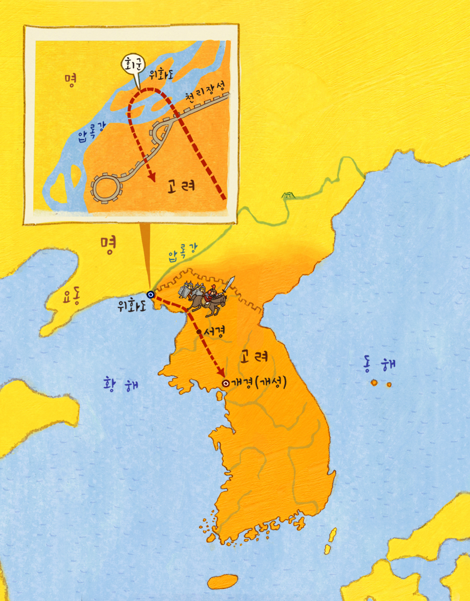
위화도에서 군대를 돌리는 이성계
개경으로 돌아온 이성계는 군사력을 바탕으로 정치의 중심에 섰어요. 고려의 마지막 임금 공양왕을 폐위하고, 1392년 7월, 마침내 새 나라를 세웠답니다.
위화도 회군(威化島 回軍): 위화도에서 군대를 돌린 사건. 이성계가 권력을 잡는 결정적 계기가 되었어요.
폐위(廢位): 임금의 자리에서 강제로 물러나게 하는 것.
요동(遼東): 현재 중국 동북부 지역. 고구려의 옛 땅으로, 고려 우왕은 이 땅을 되찾으려 했어요.
이성계가 칼로 나라를 세웠다면, 정도전은 붓으로 나라를 설계했어요. 정도전은 고려 말의 뛰어난 유학자로, 새 나라의 청사진을 그린 사람이에요.
정도전은 조선경국전이라는 책을 써서 새 나라의 법과 제도를 설계했어요. 그의 꿈은 단순했지만 혁명적이었답니다.
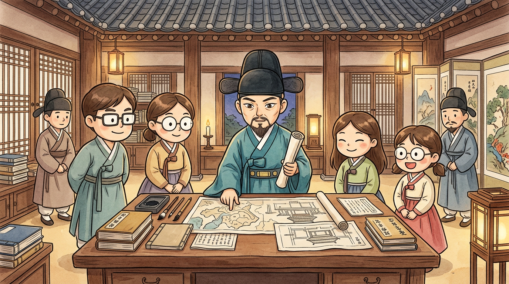
조선의 제도를 설계하는 정도전
"재상 중심의 정치": 임금 한 사람이 마음대로 하는 나라가 아니라, 뛰어난 신하들이 함께 의논하여 다스리는 나라. 임금이 어리석어도 좋은 신하가 있으면 나라가 잘 돌아가도록!
"유교적 이상 국가": 불교 대신 유교(성리학)를 나라의 기본 사상으로 삼고, 백성을 위한 정치를 펼치는 나라.
"백성이 근본": 나라의 근본은 백성이니, 백성이 편안해야 나라가 편안하다.
정도전은 새 수도 한양(서울)의 설계에도 깊이 관여했어요. 경복궁의 이름도 정도전이 지었답니다. "큰 복을 누리라(君子萬年 介爾景福)"는 뜻이에요.
하지만 정도전의 꿈은 비극적인 결말을 맞이하게 됩니다...
새 나라를 세우려는 이성계 세력에 끝까지 반대한 사람이 있었어요. 바로 정몽주예요.
정몽주는 고려에 대한 충절을 지키며, 이성계의 아들 이방원이 회유하려 하자 유명한 시를 읊었어요.
이 몸이 죽고 죽어 일백 번 고쳐 죽어
백골이 진토 되어 넋이라도 있고 없고
임 향한 일편단심이야 가실 줄이 있으랴
— 정몽주
이방원은 정몽주를 설득할 수 없다고 판단하고, 선죽교에서 그를 죽이고 말았어요. 전설에 따르면 선죽교의 돌에 정몽주의 핏자국이 남아, 비가 오면 붉게 변한다고 해요.
이방원이 정몽주를 회유하기 위해 읊은 시가 하여가(何如歌)예요. "이런들 어떠하며 저런들 어떠하리, 만수산 드렁칡이 얽혀진들 어떠하리, 우리도 이같이 얽혀서 백 년까지 누리리라" — 함께 새 나라를 세우자는 뜻이었지만, 정몽주는 단심가로 거절했답니다.
조선이 건국된 후, 이방원은 분노하고 있었어요. 조선 건국에 가장 큰 공을 세운 것은 자신인데, 정도전이 어린 동생 이방석을 세자(다음 왕)로 만들었기 때문이에요.
1398년, 이방원은 무력으로 정도전과 세자 이방석을 죽이고 권력을 잡았어요. 이것이 제1차 왕자의 난이에요. 정도전의 꿈이었던 "재상 중심의 정치"는 이렇게 무너졌답니다.
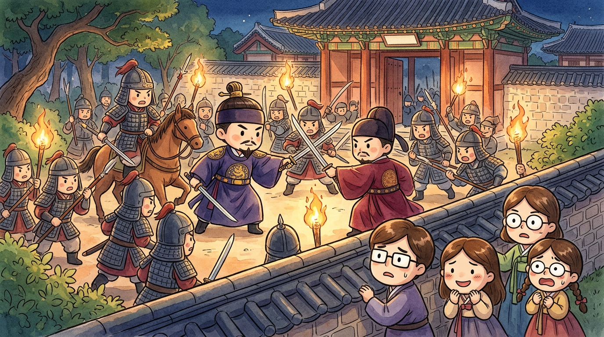
권력을 둘러싼 왕자의 난
이방원은 형 정종에 이어 조선의 3대 왕 태종이 되었어요. 태종은 냉정하고 무서운 왕이었지만, 강력한 왕권을 확립하여 조선의 기초를 튼튼히 다졌답니다.
6조 직계제: 6개 부서(이조, 호조, 예조, 병조, 형조, 공조)가 왕에게 직접 보고하게 하여 왕권을 강화했어요.
사병 혁파: 개인이 거느리던 군대를 없애고, 모든 군사를 왕이 직접 통솔하게 했어요.
호패법: 16세 이상의 남자에게 신분증(호패)을 지니게 하여 인구를 파악했어요.
정도전은 "재상 중심의 정치"를 꿈꾸었고, 이방원(태종)은 "왕 중심의 정치"를 추구했어요. 어떤 방식이 더 좋은 정치일까요? 오늘날의 민주주의와 비교해 볼까요?
이성계는 왕의 명령을 거역하고 위화도에서 군대를 돌렸어요. '명령에 따르는 것'과 '옳다고 생각하는 것을 하는 것' 중 어떤 것이 더 중요할까요?
이것은 상황에 따라 달라요. 보통은 규칙과 명령을 따르는 것이 사회를 유지하는 데 중요해요. 하지만 그 명령이 명백히 잘못되었을 때는 용기를 내어 반대할 수도 있어야 해요. 이성계의 경우, 무모한 전쟁으로 수많은 병사가 죽을 상황이었기에 회군이 합리적인 판단이었어요. 하지만 결국 그 힘으로 왕위를 빼앗은 것은 또 다른 문제랍니다.
정도전과 이방원은 둘 다 조선을 위해 일했지만, 결국 한 사람이 다른 사람을 죽였어요. 같은 목표를 가진 사람들이 왜 싸우게 될까요?
같은 목표(좋은 나라 만들기)를 가졌어도, 그 방법에 대한 생각이 다르면 충돌이 생겨요. 정도전은 신하들이 중심이 되는 나라를, 이방원은 왕이 중심이 되는 나라를 원했거든요. 또한 권력을 누가 가질 것인가의 문제도 있었어요. 이런 갈등을 대화와 타협으로 풀지 못하면 비극이 생긴답니다. 오늘날 민주주의에서 토론과 투표로 결정하는 이유가 바로 이것이에요.
정몽주는 망해가는 고려에 끝까지 충성했어요. 이것은 훌륭한 것일까요, 아니면 어리석은 것일까요?
정몽주의 충절은 분명 존경받을 만해요. 자기 신념을 목숨보다 소중히 여긴 것이니까요. 하지만 다른 관점에서 보면, 이미 부패한 나라에 집착하기보다 새로운 나라에서 백성을 위해 일하는 것이 더 나을 수도 있어요. 중요한 것은 '무엇에 충성할 것인가'를 스스로 깊이 생각하는 것이에요. 무조건적인 충성보다 올바른 가치에 대한 충성이 더 의미 있답니다.
1418년, 태종의 셋째 아들 이도가 왕위에 올랐어요. 바로 세종대왕이에요. 원래 세자는 큰형 양녕대군이었지만, 양녕대군이 학문보다 놀기를 좋아하여 태종이 셋째 아들로 세자를 바꾸었답니다.
세종은 어릴 때부터 책을 너무 좋아해서, 아버지 태종이 "책 좀 그만 읽어라" 하고 걱정할 정도였어요. 밤새 촛불을 켜고 책을 읽어 건강이 나빠질까 봐, 태종이 세종의 방에서 책을 모두 치우게 한 적도 있었답니다. 그래도 세종은 이불 속에 책을 숨기고 몰래 읽었대요!
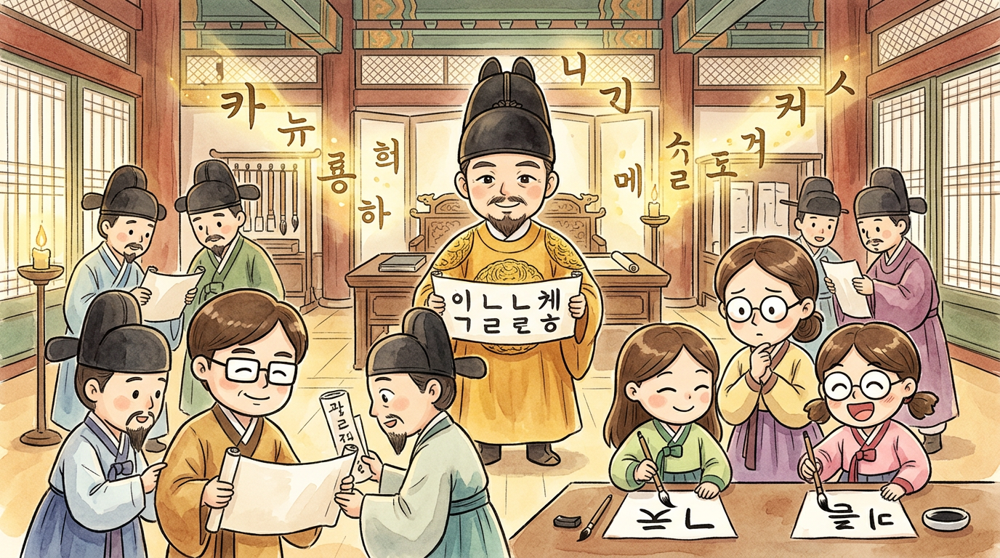
책을 사랑한 어린 세종
왕이 된 세종은 집현전(集賢殿)을 크게 키웠어요. 집현전은 나라에서 가장 뛰어난 학자들을 모아 연구하게 하는 기관이었어요. 요즘으로 치면 국가 연구소와 비슷하답니다.
세종은 집현전 학자들에게 사가독서(賜暇讀書)라는 특별한 혜택을 주었어요. 공무를 쉬고 오직 책만 읽게 하는 유급 연구 휴가였답니다! 성삼문, 박팽년, 신숙주 등 뛰어난 인재들이 집현전에서 자라났어요.
세종 시대 과학기술의 꽃을 이야기하려면, 장영실을 빼놓을 수 없어요. 장영실은 놀랍게도 관노비(관청에 속한 노비) 출신이었어요!
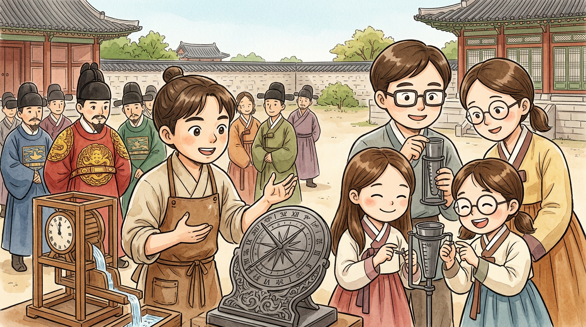
천체관측기구를 만드는 장영실
동래(지금의 부산) 관청의 노비였던 장영실은 어릴 때부터 손재주가 뛰어나고 기계를 만드는 데 천재적인 재능이 있었어요. 그의 실력이 소문나자 태종이 그를 궁궐로 불러올렸고, 세종은 장영실의 재능을 알아보고 파격적으로 벼슬을 내렸답니다.
당시 양반들은 "노비 출신에게 벼슬을 주다니!" 하며 강하게 반대했어요. 하지만 세종은 "사람의 재능은 신분으로 판단할 수 없다"며 반대를 물리쳤답니다.
장영실이 만든 것들은 정말 놀라워요. 하나하나 자세히 살펴볼까요?
혼천의는 하늘에서 별과 해, 달이 어떻게 움직이는지 보여주는 천문 관측 기구예요. 여러 개의 둥근 고리가 겹겹이 놓여 있고, 각 고리가 하늘의 적도, 황도(태양의 길), 지평선 등을 나타내요.
장영실은 여기에 물시계(자격루)의 동력을 연결하여, 혼천의가 실제 하늘의 움직임에 맞춰 자동으로 돌아가게 만들었어요! 오늘날의 플라네타리움(천체투영관)과 비슷한 원리랍니다.
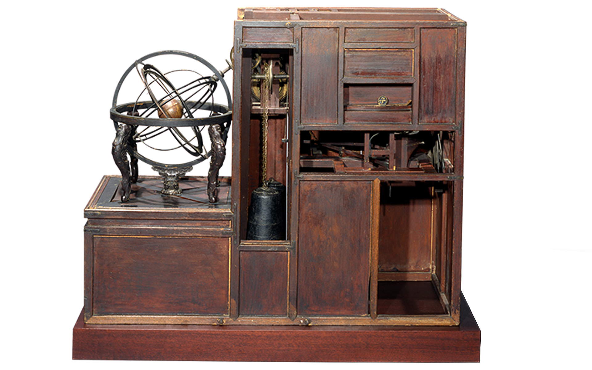
하늘의 움직임을 재현하는 혼천의
자격루는 장영실의 가장 위대한 발명품 중 하나예요. 이름의 뜻은 "스스로(自) 치는(擊) 물시계(漏)"예요.
어떻게 작동했을까요?
1단계: 위쪽 물통에서 아래쪽 물통으로 물이 일정한 속도로 떨어져요.
2단계: 아래쪽 물통의 수면이 올라가면, 물 위에 떠 있는 잣대(부표)가 함께 올라가요.
3단계: 잣대가 일정 높이에 도달하면, 작은 쇠구슬이 굴러가요.
4단계: 구슬이 장치를 작동시켜 자동으로 종, 북, 징을 쳐서 시각을 알려줘요!
5단계: 동시에 시각을 나타내는 나무 인형이 나타나 시간표를 보여줘요.
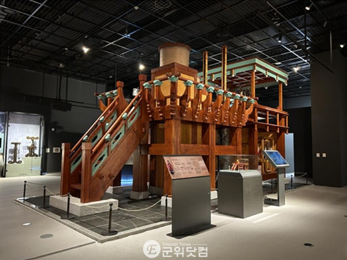
스스로 종을 치는 자격루의 구조
자격루는 사람이 일일이 시간을 확인하지 않아도 자동으로 시간을 알려주는 놀라운 기계였어요. 오늘날의 자동 알람시계와 같은 원리이지만, 600년 전에 기계식 자동화를 구현했다는 것이 정말 대단하답니다!
앙부일구는 "하늘을 우러러보는(仰) 솥(釜) 모양의 해시계(日晷)"라는 뜻이에요. 솥처럼 오목한 반구 모양의 해시계인데, 가운데 막대(영침)의 그림자가 시간을 가리켜요.
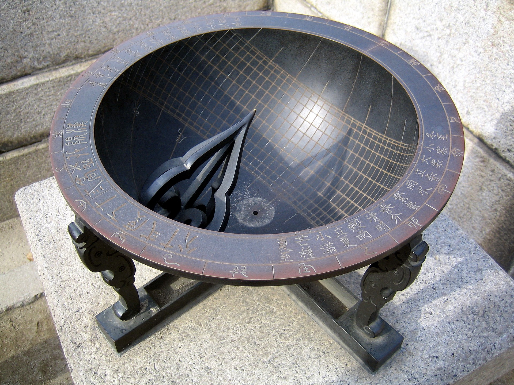
종로 거리에 설치된 앙부일구
특별한 점은 오목한 면에 시간선과 절기선이 함께 새겨져 있어서, 시간뿐만 아니라 지금이 어떤 절기인지도 알 수 있었어요. 농사를 짓는 백성들에게 절기 정보는 매우 중요했답니다.
세종은 이 해시계를 궁궐 안에만 두지 않고, 종로 거리에 설치하여 누구나 시간을 알 수 있게 했어요. 글을 모르는 백성도 쉽게 읽을 수 있도록 12지신(쥐, 소, 호랑이...)의 그림으로 시간을 표시했답니다.
1441년(일부 기록으로는 1442년), 세종의 아들 문종(당시 세자)의 제안으로 만들어진 측우기는 빗물의 양을 정확히 재는 장치예요.
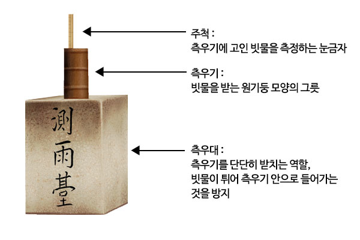
빗물의 양을 측정하는 측우기
이전에는 비가 얼마나 왔는지를 "땅에 물이 얼마나 스며들었는가"로 대충 측정했어요. 하지만 땅의 종류에 따라 스며드는 양이 달라서 정확하지 않았답니다.
측우기는 통일된 규격의 그릇에 빗물을 받아 자(눈금)로 정확히 측정하는 방식이에요. 전국의 모든 고을에 같은 규격의 측우기를 설치하고, 비가 올 때마다 측정 결과를 중앙에 보고하게 했어요.
유럽에서 비슷한 우량계를 만든 것은 이탈리아의 카스텔리가 1639년이니, 측우기가 약 200년이나 앞선 것이에요!
칠정산은 해, 달, 그리고 다섯 행성(수성, 금성, 화성, 목성, 토성)의 움직임을 계산하여 만든 역법(달력 계산법)이에요. "일곱(七) 개의 천체(政)를 계산(算)한다"는 뜻이에요.
이전까지 조선은 중국의 달력을 그대로 가져다 썼어요. 하지만 중국과 조선은 위치가 다르기 때문에, 일식이나 월식의 시간이 맞지 않는 문제가 있었답니다.
세종은 이순지와 김담에게 명하여 한양(서울)의 위도에 맞는 독자적인 달력 계산법을 만들게 했어요. 칠정산은 내편(중국 역법 기반)과 외편(아라비아 역법 기반)으로 나뉘어, 동서양의 천문학 지식을 모두 활용한 당시 최첨단 역법이었답니다.
혼천의(渾天儀): 하늘의 움직임을 재현하는 천문 관측 기구. 여러 겹의 고리로 천체의 위치를 나타내요.
자격루(自擊漏): 물의 힘으로 자동으로 시각을 알려주는 물시계.
앙부일구(仰釜日晷): 오목한 솥 모양의 해시계. 시간과 절기를 동시에 알 수 있어요.
측우기(測雨器): 빗물의 양을 정확히 재는 장치. 세계 최초의 표준화된 강우량 측정기.
칠정산(七政算): 해, 달, 5행성의 운행을 계산하는 달력. 한양 기준으로 만든 조선 독자 역법.
이렇게 빛나는 업적을 남긴 장영실에게 비극이 닥쳤어요. 1442년, 장영실이 만든 왕의 가마가 부러지는 사고가 발생했어요. 왕이 타는 가마가 부러졌으니 이것은 큰 죄였답니다.
장영실은 곤장 100대를 맞고 파직(벼슬에서 쫓겨남)되었어요. 그 뒤 장영실의 기록은 역사에서 완전히 사라져요. 어디서 어떻게 살다 세상을 떠났는지 아무도 몰라요.
노비 출신이라는 이유로 장영실의 업적이 제대로 기록되지 않았을 가능성이 높아요. 사람의 가치를 신분이나 출신으로 판단하면 안 된다는 교훈을 줘요. 만약 장영실이 양반 출신이었다면 역사가 달라졌을까요?
세종 시대의 과학기술 수준은 당시 세계 최고 수준이었어요! 특히 천문학과 기상학 분야에서는 중국이나 아라비아를 넘어서는 성과를 거두었답니다. 측우기는 세계 최초이고, 자격루는 동아시아에서 가장 정교한 자동 물시계였어요. 오늘날 대한민국이 과학기술 강국이 된 뿌리가 여기에 있는지도 몰라요!
세종은 노비 출신 장영실에게 벼슬을 주며 '사람의 재능은 신분으로 판단할 수 없다'고 했어요. 오늘날에도 비슷한 편견이 있을까요? 어떻게 하면 모든 사람의 재능을 공정하게 인정할 수 있을까요?
오늘날에도 학벌, 출신 지역, 성별, 외모 등으로 사람을 판단하는 편견이 여전히 있어요. 좋은 대학을 나오지 않았다고 능력이 없다고 생각하거나, 특정 지역 출신이라고 편견을 갖는 것이 그 예예요. 모든 사람의 재능을 공정하게 인정하려면, 결과물과 실력 자체를 보는 습관을 길러야 해요. 세종처럼 '이 사람이 무엇을 할 수 있는가'에 집중하는 자세가 필요하답니다.
측우기는 전국에 같은 규격으로 설치하여 비의 양을 정확히 비교할 수 있게 했어요. 이런 '표준화'가 왜 중요한지 일상생활의 예를 들어 설명해 보세요.
표준화가 없으면 소통과 비교가 불가능해요. 예를 들어, 길이를 재는 단위가 사람마다 다르면 건물을 지을 수 없겠죠? 오늘날 USB 충전 단자, 도로 교통 신호, 시간 단위 등이 모두 표준화의 예예요. 측우기의 표준화 덕분에 조선은 전국의 강수량 데이터를 모아 홍수를 예측하고 농사를 계획할 수 있었어요. 이것은 오늘날 기상청의 역할과 같답니다.
세종 시대에 이렇게 뛰어난 과학기술이 있었는데, 왜 이후 조선에서는 과학기술이 크게 발전하지 못했을까요?
여러 이유가 있어요. 첫째, 조선의 양반들은 과학기술을 '잡학(하찮은 학문)'으로 여기고 유교 경전 공부만 중요시했어요. 둘째, 장영실처럼 뛰어난 기술자들의 신분이 낮아 제대로 대우받지 못했어요. 셋째, 세종 같은 과학에 관심 있는 왕이 드물었어요. 이것은 '사회가 어떤 것을 중요하게 여기느냐'가 발전 방향을 결정한다는 교훈을 줘요. 과학기술을 중요시하는 문화가 있어야 발전할 수 있답니다.
조선 시대에 사용하던 글자는 한자(漢字)였어요. 하지만 한자는 수천 개의 복잡한 글자를 외워야 하는 매우 어려운 문자였답니다.
양반들은 어릴 때부터 한자를 배울 수 있었지만, 평민과 노비는 배울 기회가 없었어요. 그래서 조선 백성의 대부분은 글을 읽지도 쓰지도 못했어요.
이것은 심각한 문제를 만들었어요. 억울한 일을 당해도 관청에 글로 호소할 수 없었고, 나라의 법이 바뀌어도 읽을 수 없었으며, 농사에 도움이 되는 책이 나와도 볼 수 없었답니다.
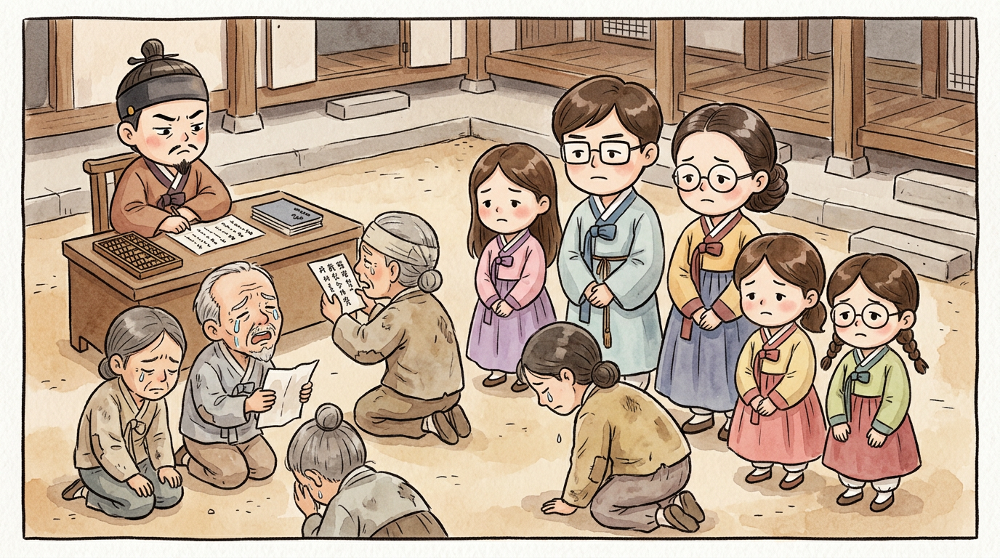
글을 몰라 억울한 일을 호소하지 못하는 백성들
세종은 이런 백성들의 고통을 깊이 안타까워했어요. 훈민정음 서문에 세종의 마음이 잘 담겨 있답니다.
"나랏말이 중국과 달라 한자와는 서로 통하지 아니하므로, 어리석은 백성이 말하고자 하는 바가 있어도 마침내 제 뜻을 펴지 못하는 사람이 많다. 내가 이를 불쌍히 여겨 새로 스물여덟 자를 만드니, 모든 사람이 쉽게 익혀 날마다 쓰는 데 편하게 하고자 할 따름이다."
"어리석은 백성"이라는 표현은 백성을 무시한 것이 아니에요. 글을 몰라 어리석게 될 수밖에 없는 환경을 안타까워한 것이에요. 세종은 글을 몰라 고통받는 백성을 진심으로 걱정했답니다.
세종은 비밀리에 새 글자를 만들기 시작했어요. 양반 신하들이 반대할 것을 알았기 때문이에요. 1443년, 마침내 훈민정음(訓民正音)이 완성되었어요.
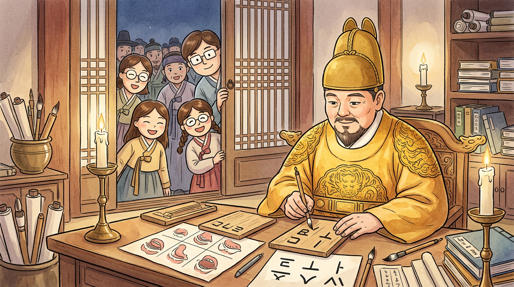
훈민정음 창제의 원리를 보여주는 세종
자음(닿소리): 소리를 낼 때 입, 혀, 목구멍의 모양을 본떠 만들었어요.
ㄱ: 혀뿌리가 목구멍을 막는 모양 / ㄴ: 혀끝이 윗잇몸에 닿는 모양
ㅁ: 입 모양 / ㅅ: 이 모양 / ㅇ: 목구멍 모양
모음(홀소리): 하늘(·), 땅(ㅡ), 사람(ㅣ)의 세 가지 기본 요소를 조합했어요.
이것은 세계 어떤 문자에서도 찾아볼 수 없는 독창적이고 과학적인 원리랍니다!
세종이 새 글자를 발표하자, 집현전 부제학 최만리 등이 강하게 반대했어요.
"우리나라는 대대로 중국의 제도를 따랐는데, 이제 별도의 글자를 만드는 것은 중국을 버리는 것입니다!"
"새 글자는 오랑캐의 것과 같으니, 문명국의 체면이 서지 않습니다!"
"한자를 모르는 것이 문제라면 한자를 더 많이 가르치면 됩니다!"
세종은 이런 반대에 단호하게 맞섰어요.
"네가 운서(음운학)를 아느냐? 사성(네 가지 성조)과 칠음(일곱 가지 소리)을 아느냐? 만약 내가 운서를 바로잡지 않으면 누가 바로잡을 것이냐!"
세종의 이 말은 자신이 음성학과 음운학에 깊은 전문 지식을 가지고 훈민정음을 만들었음을 보여줘요.
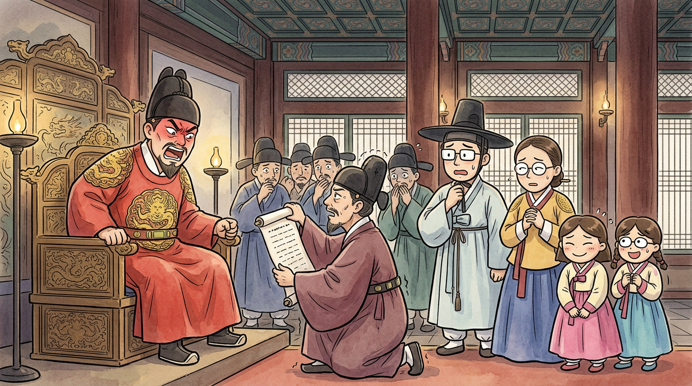
세종에게 반대 상소를 올리는 최만리
1446년 음력 9월(양력 10월 9일경), 세종은 훈민정음을 공식적으로 반포했어요. 오늘날 10월 9일이 한글날인 이유가 바로 이것이에요.
훈민정음은 "지혜로운 사람은 아침나절이 되기 전에 깨칠 수 있고, 어리석은 사람도 열흘이면 배울 수 있다"라고 할 만큼 배우기 쉬운 글자였어요.
세계의 언어학자들은 한글을 "세계에서 가장 과학적이고 합리적인 문자"로 평가해요. 영국의 언어학자 제프리 샘슨은 "한글은 인류가 만든 가장 위대한 지적 업적 중 하나"라고 했답니다. 유네스코도 한글의 우수성을 인정하여 세종대왕 문해상을 만들어 문맹 퇴치에 공헌한 단체에 수여하고 있어요.
세종은 양반들의 강한 반대에도 불구하고 훈민정음을 만들었어요. "모든 백성이 글을 읽고 쓸 수 있어야 한다"는 세종의 생각이 왜 혁명적이었을까요? 오늘날의 교육 기회와 비교해 보세요.
세종은 '백성이 글을 읽고 쓸 수 있어야 한다'고 생각했지만, 당시 양반들은 '백성이 글을 알면 나라가 혼란해진다'고 반대했어요. 누구의 생각이 맞았을까요?
세종의 생각이 맞았어요. 백성이 글을 알면 스스로 법을 알고 지킬 수 있고, 기술을 배울 수 있고, 자기 생각을 표현할 수 있어요. 양반들이 반대한 진짜 이유는 '백성이 깨우치면 자기들의 특권이 약해질까 봐' 두려웠기 때문이에요. 오늘날 교육이 보편화된 나라일수록 더 발전한다는 사실이 세종의 생각이 옳았음을 증명해요.
한글은 만든 사람, 만든 시기, 만든 원리가 모두 명확한 세계 유일의 문자예요. 이것이 왜 중요한지 다른 문자와 비교하여 설명해 보세요.
영어 알파벳, 한자, 아랍 문자 등 대부분의 문자는 수천 년에 걸쳐 자연스럽게 변화하면서 만들어졌기 때문에 누가 만들었는지 알 수 없어요. 반면 한글은 세종대왕이라는 '창제자'가 명확하고, 1443년이라는 '창제 시기', 발음 기관의 모양을 본떴다는 '창제 원리'가 모두 기록되어 있어요. 이것은 한글이 과학적 연구와 깊은 고민 끝에 설계된 문자임을 보여주며, 학술적으로도 매우 귀중한 자료랍니다.
만약 세종이 훈민정음을 만들지 않았다면 우리나라는 어떻게 되었을까요?
아마 지금도 한자를 주로 사용하고 있을 거예요. 그러면 글을 배우는 데 훨씬 오래 걸리고, 많은 사람이 문맹 상태에 머물러 있을 수 있어요. 일본처럼 한자와 자국 문자를 함께 쓰는 복잡한 체계가 되었을 수도 있고요. 한글 덕분에 한국은 세계에서 문맹률이 가장 낮은 나라 중 하나가 되었고, 빠른 정보 전달이 가능해져 경제 발전에도 큰 도움이 되었답니다.
세종이 세상을 떠난 뒤, 아들 문종이 왕이 되었지만 병약하여 2년 만에 세상을 떠났어요. 어린 아들 단종이 12살의 나이로 왕이 되었답니다.
단종의 삼촌인 수양대군은 야심이 큰 인물이었어요. 1453년, 수양대군은 계유정난을 일으켜 단종을 보필하던 김종서, 황보인 등 대신들을 죽이고 권력을 장악했어요.
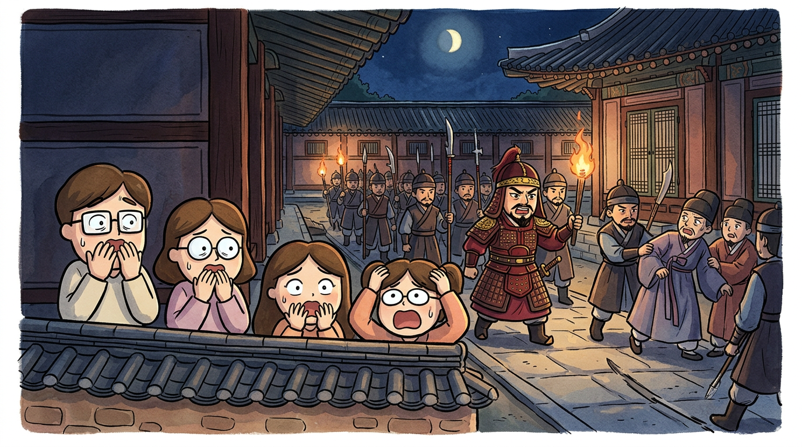
계유정난으로 권력을 잡는 수양대군
1455년, 수양대군은 어린 조카 단종에게 왕위를 넘기도록 강요하고, 스스로 왕이 되었어요. 이가 바로 세조예요.
세조의 왕위 찬탈에 분노한 사람들이 있었어요. 집현전 출신의 학자 성삼문, 박팽년, 이개, 하위지, 유성원, 유응부 여섯 명은 단종을 다시 왕위에 올리려는 비밀 계획을 세웠어요.
하지만 계획이 발각되어 여섯 명 모두 잡혀서 끔찍한 고문을 받고 처형되었어요. 이들을 사육신(死六臣)이라 불러요. "죽은 여섯 신하"라는 뜻이에요.
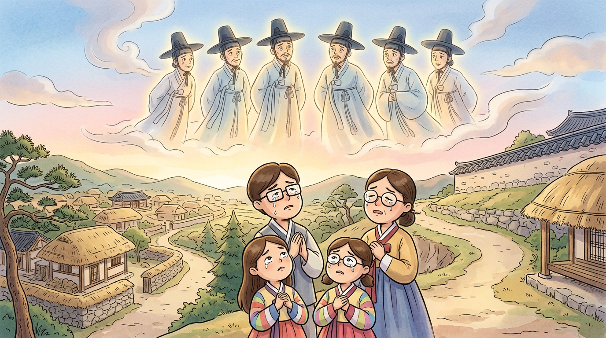
끝까지 충절을 지킨 사육신
세조가 성삼문에게 물었어요. "네가 왜 나를 배신했느냐?"
성삼문이 대답했어요. "나으리(세조를 왕으로 인정하지 않는 표현)가 왕위를 빼앗은 것이지, 제가 배신한 것이 아닙니다."
죽음 앞에서도 세조를 왕으로 인정하지 않은 성삼문의 굳은 의지를 보여주는 일화예요.
한편, 세조에 대한 충성을 거부하고 벼슬을 버린 채 숨어 살면서 단종에 대한 절개를 지킨 여섯 명을 생육신(生六臣)이라 해요. 김시습, 원호, 이맹전, 조려, 성담수, 남효온이 그들이에요.
왕위에서 쫓겨난 단종은 노산군으로 강등되어 강원도 영월로 유배되었어요. 1457년, 사육신의 복위 사건을 구실로 세조는 17살의 단종에게 사약을 내려 죽게 했답니다.
전설에 따르면, 단종의 시신을 아무도 감히 수습하지 못했는데, 영월 호장 엄흥도만이 벼슬을 잃을 각오로 시신을 거두어 장사 지냈다고 해요.
세조를 도와 공을 세운 세력을 훈구파라 해요. 이들은 대대로 높은 벼슬을 차지하고 넓은 땅을 가진 권력 집단이 되었어요.
이에 맞서 새로운 세력이 등장했어요. 바로 사림파예요. 사림파는 시골에서 학문을 연구하고 도덕을 중시하는 선비들이었어요. 성종 때부터 중앙 정계에 진출하기 시작했답니다.
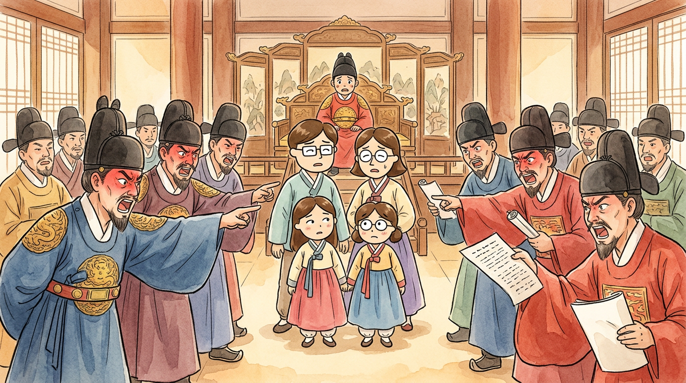
훈구파와 사림파의 대립
훈구파(勳舊派): 세조의 왕위 찬탈을 도와 공신이 된 세력과 그 후손들. 권력과 재산을 독점했어요.
사림파(士林派): 시골의 선비들. 성리학적 도덕과 원칙을 중시하고, 훈구파의 부정부패를 비판했어요.
사화(士禍): 사림파의 선비들이 정치적으로 탄압받은 사건. 글자 그대로 "선비(士)의 재앙(禍)"이에요.
사림파가 중앙 정계에 진출하자, 기존 권력을 가진 훈구파와 충돌이 시작되었어요. 그 결과 네 번의 큰 사화가 일어났답니다.
무오사화 (1498, 연산군): 김종직의 제자들이 세조의 왕위 찬탈을 비판한 글(조의제문)을 썼다는 이유로 사림파가 탄압받았어요.
갑자사화 (1504, 연산군): 연산군이 자기 어머니(폐비 윤씨)의 죽음에 관련된 사람들을 대대적으로 처벌한 사건. 수백 명이 죽었어요.
기묘사화 (1519, 중종): 조광조 등 개혁적인 사림파가 급진적인 개혁을 추진하다가 훈구파의 반격으로 제거되었어요.
을사사화 (1545, 명종): 외척(왕비의 친척) 세력 간의 권력 다툼으로 사림파가 다시 큰 피해를 입었어요.
네 번의 사화 중 두 번(무오사화, 갑자사화)이 연산군 때 일어났어요. 연산군은 조선 역사상 가장 잔인한 왕으로 기록되어 있어요.
갑자사화 때 연산군은 이미 세상을 떠난 사람의 무덤까지 파헤치고, 신하들의 혀를 뽑는 등 끔찍한 일을 벌였어요. 또한 성균관(대학교)을 놀이터로 만들고, 전국에서 아름다운 여성들을 강제로 데려오는 등 폭정을 일삼았답니다.
결국 1506년, 중종반정으로 연산군은 폐위되고, 중종이 새 왕이 되었어요. 연산군은 '왕(王)'도 아닌 '군(君)'으로 불리는데, 이는 폐위된 왕에게 붙이는 칭호예요.
네 번의 사화를 겪으며 많은 사림이 목숨을 잃었지만, 사림파는 포기하지 않았어요. 서원(사립학교)과 향약(마을 자치 규약)을 통해 시골에서 꾸준히 세력을 키웠답니다.
마침내 선조(1567년 즉위) 때, 사림파가 중앙 정치를 완전히 장악했어요. 하지만 이제 사림파 내에서 동인과 서인으로 나뉘는 붕당정치가 시작되었답니다...
조광조는 '현량과'라는 특별 시험을 만들어 도덕적으로 뛰어난 사람을 추천으로 뽑으려 했어요. 하지만 훈구파는 이것이 자기 세력의 사람들만 뽑으려는 꼼수라고 비난했답니다. 개혁이 너무 급하면 오히려 반발을 불러온다는 교훈을 보여주는 사건이에요.
사육신은 죽음을 각오하고 자신의 신념을 지켰어요. 반면 신숙주는 세조에 협력하여 살아남았어요. 둘 중 누구의 선택이 더 현명했을까요? 아니면 둘 다 나름의 이유가 있었을까요?
세조는 조카의 왕위를 빼앗았지만, 나라를 안정시키고 여러 업적을 남기기도 했어요. 잘못된 방법으로 좋은 결과를 낸 것을 어떻게 평가해야 할까요?
이것은 역사에서 자주 나오는 어려운 질문이에요. 세조는 왕위를 빼앗은 과정에서 많은 사람을 죽인 것은 명백한 잘못이에요. 하지만 왕이 된 후 국방을 강화하고, 법전을 정비하는 등의 업적도 있어요. 중요한 것은 '업적이 있으니 잘못도 괜찮다'가 아니라, 잘못은 잘못으로 인정하고 업적은 업적으로 평가하는 균형 잡힌 시각이에요.
사림파는 네 번이나 큰 탄압을 받았지만 결국 승리했어요. 포기하지 않으면 결국 이길 수 있다는 것을 보여주는 다른 역사적 예를 찾아볼까요?
마틴 루터 킹의 미국 민권운동, 간디의 인도 독립운동, 넬슨 만델라의 남아프리카 반아파르트헤이트 운동 등이 비슷한 예예요. 이들 모두 수십 년의 탄압과 고난을 겪었지만 결국 목표를 이루었어요. 사림파가 서원과 향약으로 꾸준히 세력을 키운 것처럼, 이 운동들도 교육과 조직화를 통해 저력을 쌓았답니다. 정의로운 뜻이 포기하지 않으면 결국 이긴다는 교훈이에요.
연산군은 왕이면서도 폐위되었어요. 지도자가 폭정을 하면 물러나게 하는 것이 맞을까요? 현대 민주주의에서는 이것을 어떻게 해결하나요?
지도자가 국민을 위해 일하지 않고 폭정을 한다면, 교체하는 것이 맞아요. 조선 시대에는 신하들이 반정(쿠데타)으로 왕을 바꿨지만, 이것은 위험하고 폭력적인 방법이에요. 현대 민주주의에서는 선거, 탄핵, 삼권분립 등의 제도로 지도자의 권력을 제한하고, 잘못하면 평화적으로 교체할 수 있어요. 법과 제도로 해결하는 것이 폭력보다 훨씬 안전하고 효과적이랍니다.
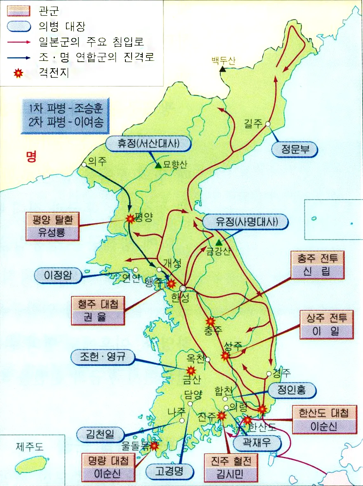
임진왜란 당시 일본군 진격로와 주요 전투지 (1592년)
일본에서는 100년 넘게 이어진 전국시대(센고쿠 시대)가 끝나고, 도요토미 히데요시가 일본을 통일했어요. 히데요시에게는 문제가 있었어요. 전쟁이 끝나자 수십만 명의 무사(사무라이)들이 할 일이 없어진 거예요.
히데요시는 이 군사력을 밖으로 돌리기로 했어요. "명나라를 정복하겠다! 그 길을 조선이 빌려달라(정명가도)!"
물론 이것은 핑계에 불과했어요. 히데요시의 진짜 목적은 조선과 명나라를 모두 정복하는 것이었답니다.
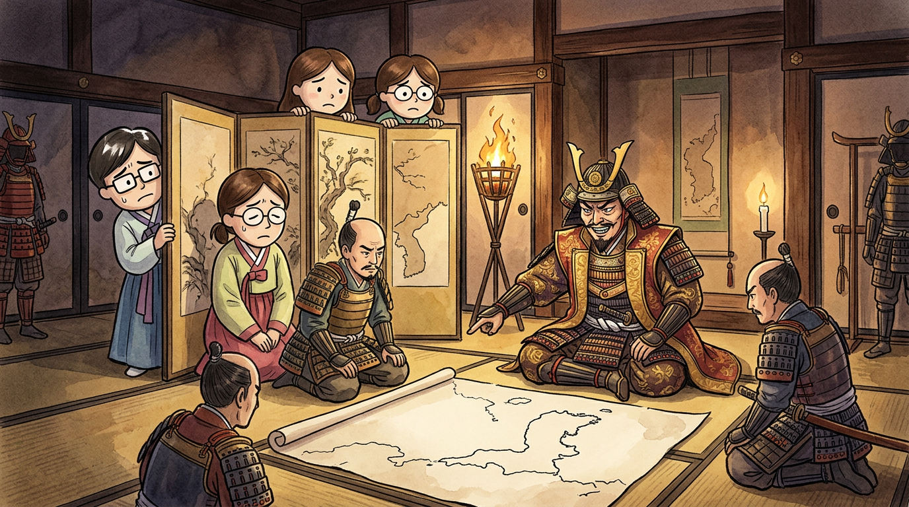
대륙 정복의 야망을 품은 도요토미 히데요시
사실 조선에게는 경고 신호가 있었어요. 1590년, 조선은 일본의 상황을 알아보기 위해 통신사를 보냈어요. 정사(대표) 황윤길과 부사 김성일이 함께 갔답니다.
돌아온 두 사람의 보고는 완전히 달랐어요!
황윤길(서인): "히데요시의 눈빛이 날카롭고 담력이 있으니, 반드시 전쟁이 일어날 것입니다!"
김성일(동인): "히데요시는 쥐 같은 눈을 가진 자로, 두려워할 것이 없습니다. 황윤길이 백성을 놀라게 하려는 것입니다."
당시 조정을 장악하고 있던 동인은 김성일의 말을 믿었어요. 아니, 믿고 싶었어요. 전쟁을 준비하려면 돈과 노력이 필요한데, 그것이 부담스러웠기 때문이에요.
조선이 일본의 침략 경고를 무시한 것은 역사에서 가장 뼈아픈 실수 중 하나예요. 그 원인을 깊이 살펴보면:
1. 붕당의 폐해: 황윤길은 서인, 김성일은 동인이었어요. 동인이 서인의 말을 인정하면 정치적으로 불리해지기 때문에, 국가 안보보다 당파의 이익을 우선시했어요.
2. 200년의 평화가 부른 방심: 조선은 건국 이후 약 200년간 큰 전쟁이 없었어요. 평화가 오래되니 "전쟁은 일어나지 않을 것"이라는 근거 없는 낙관에 빠졌어요.
3. 불편한 진실을 외면하는 심리: 사람은 듣고 싶은 말만 듣는 경향이 있어요. "전쟁이 온다"는 무서운 소식보다 "괜찮다"는 편안한 소식을 믿고 싶었던 거예요.
이것은 오늘날에도 중요한 교훈이에요. 기후변화, 전염병, 안전사고 등의 경고를 무시하면 큰 재앙이 된다는 것을 역사가 보여줘요.
사실 임진왜란이 일어나기 훨씬 전에, 위대한 학자 이이(율곡)가 이미 경고했었어요. 이이는 1583년에 "10만 명의 군사를 양성해야 한다(십만양병설)"고 주장했어요.
하지만 당시 대신들은 "쓸데없이 백성을 괴롭히려 한다"며 반대했고, 이이는 뜻을 이루지 못한 채 1584년에 세상을 떠났어요. 이이가 세상을 떠난 지 불과 8년 만에 임진왜란이 터졌답니다.
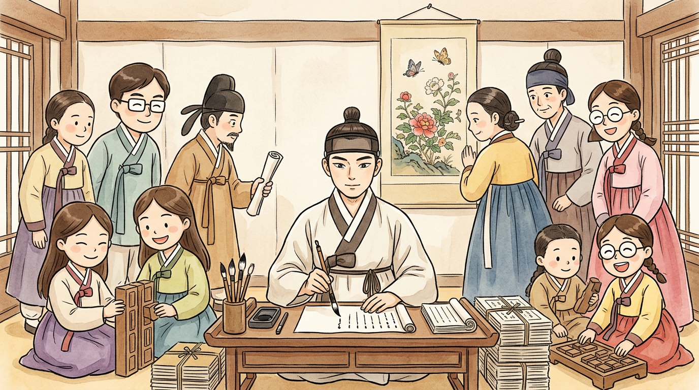
나라의 위기를 경고하는 이이(율곡)
1592년 음력 4월 13일, 드디어 히데요시의 군대가 부산에 상륙했어요. 약 15만 8천 명의 일본군이 700여 척의 배를 타고 밀려왔답니다.
일본군은 100년간의 내전을 통해 실전 경험이 풍부했고, 조총(화승총)이라는 신무기로 무장하고 있었어요. 반면 조선군은 칼과 창, 활이 주무기였답니다.
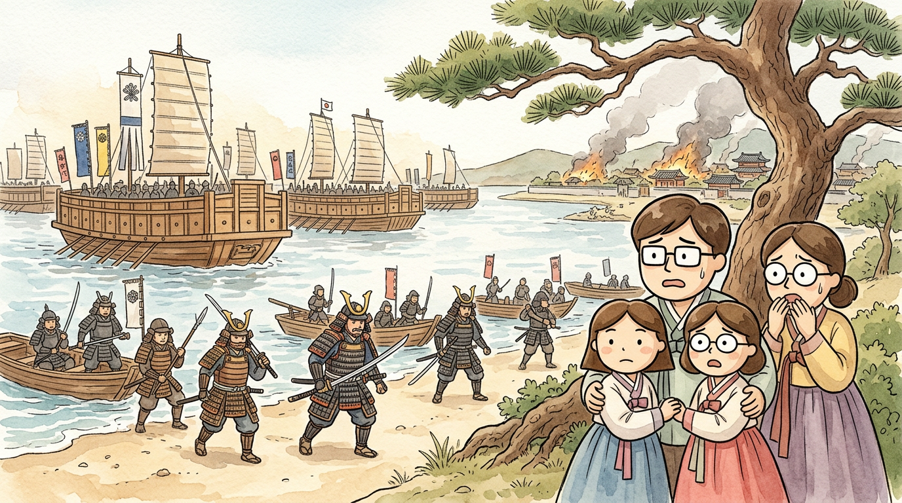
부산에 상륙하는 일본군
부산진의 첨사 정발과 동래성의 부사 송상현은 압도적인 적 앞에서도 용감하게 싸우다 전사했어요. 일본군이 "싸울 테면 싸우고, 싸우기 싫으면 길을 비켜라"라고 하자, 송상현은 "싸워 죽기는 쉬우나 길을 비키기는 어렵다(戰死易 假道難)"라고 답했답니다.
일본군의 진격 속도는 충격적이었어요. 고니시 유키나가가 이끄는 1군은 부산에서 한양까지 불과 20일 만에 도착했어요!
중간에 충주 탄금대에서 신립 장군이 막으려 했지만, 조총으로 무장한 일본군에게 참패하고 신립은 자결했어요. 신립은 평지에서 기병 전투를 벌였는데, 이것은 조총을 가진 일본군에게 최악의 전술이었답니다.
손자병법에 "적을 알고 나를 알면 백 번 싸워도 위태롭지 않다(知彼知己 百戰不殆)"라는 말이 있어요. 조선은 이 원칙을 완전히 어겼어요.
적을 몰랐어요: 일본군이 조총을 가지고 있다는 것, 100년 전쟁으로 단련되었다는 것을 알면서도 대비하지 않았어요.
나를 몰랐어요: 조선군의 훈련 상태가 형편없다는 것, 무기가 뒤처진다는 것을 인정하지 않았어요.
신립 장군은 용감했지만, 적의 무기(조총)에 대한 이해 없이 평지에서 기병 돌격을 감행한 것은 치명적인 실수였어요. 용기만으로는 전쟁을 이길 수 없다는 뼈아픈 교훈이에요.
왕 선조는 한양을 버리고 의주(압록강 근처)까지 도망갔어요. 백성을 버리고 도망가는 왕을 보며 분노한 백성들은 경복궁과 여러 관청에 불을 질렀어요. 특히 노비 문서를 보관하던 장예원이 불탔는데, 이것은 노비들이 자기 기록을 없애기 위해 의도적으로 불을 지른 것으로 보여요.
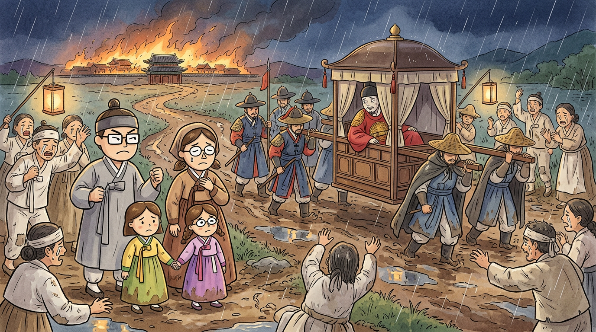
한양을 버리고 피난하는 선조
왕과 관군이 무너진 자리에서, 백성들이 스스로 일어났어요. 이들이 바로 의병(義兵)이에요.
곽재우 (홍의장군): 경상도 의령에서 붉은 옷을 입고 싸워 '홍의장군'이라 불렸어요. 게릴라 전술로 일본군의 보급로를 끊었답니다.
조헌: 충청도에서 승려 영규와 함께 700의병으로 청주성을 탈환했어요. 이후 금산 전투에서 700명 전원이 장렬히 전사했답니다.
고경명: 전라도의 의병장. 아들과 함께 출전하여 금산 전투에서 전사했어요.
정인홍, 김면: 경상도 각지에서 의병을 이끌고 일본군과 싸웠어요.
승병(승려 의병): 서산대사 휴정과 사명대사 유정이 전국의 승려들을 모아 싸웠어요.
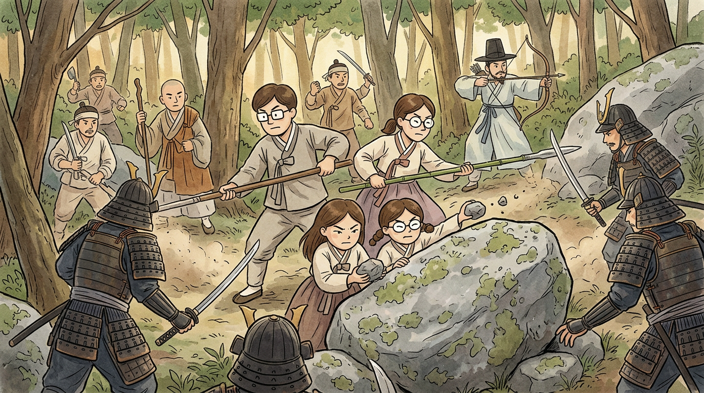
나라를 위해 일어선 의병들
의병들은 정규군이 아니었기에 무기도 부족하고 훈련도 받지 못했어요. 하지만 자기 고향을 지키겠다는 뜨거운 마음으로 싸웠어요. 일본군은 정규군은 쉽게 이겼지만, 전국 곳곳에서 나타나는 의병에는 크게 고전했답니다.
왕과 관군이 무너졌을 때, 평범한 백성들이 스스로 나라를 지키기 위해 일어났어요. 이것은 "나라는 백성의 것"이라는 것을 보여줍니다. 나라를 지키는 것은 군인만의 일일까요?
조선은 일본의 침략 경고를 여러 번 받았지만 무시했어요. '불편한 진실을 외면하는 것'이 얼마나 위험한지 역사적 예와 오늘날의 예를 들어 설명해 보세요.
조선이 경고를 무시한 것처럼, 역사에서 경고를 무시하고 큰 재앙을 당한 예가 많아요. 1941년 진주만 공격 전 미국에도 경고가 있었고, 2020년 코로나 팬데믹 전에도 전문가들의 경고가 있었어요. 오늘날 기후변화 경고를 무시하는 것도 비슷한 패턴이에요. '지금 괜찮으니까 앞으로도 괜찮을 거야'라는 생각이 가장 위험해요. 불편하더라도 경고에 귀를 기울이고 미리 준비하는 것이 진정한 지혜랍니다.
의병은 나라가 자신을 지켜주지 못할 때 백성이 스스로 일어난 것이에요. 이것은 오늘날의 시민 참여와 어떤 관계가 있을까요?
의병 정신은 '나라는 위에서 내려오는 것이 아니라 국민이 함께 만드는 것'이라는 정신이에요. 오늘날의 자원봉사, 재난 구호 활동, 시민운동 등이 비슷한 정신이에요. 나라가 어려울 때 '정부가 알아서 하겠지'가 아니라 '내가 할 수 있는 일이 뭘까'를 생각하는 것이 진정한 시민 의식이랍니다. 물론 평소에 나라가 국민을 잘 보살펴야 국민도 나라를 지키려 한다는 점도 잊지 말아야 해요.
조선의 붕당정치(당파싸움)가 국방을 약화시켰어요. 오늘날에도 정치적 대립이 국가 안보나 중요한 문제 해결을 방해하는 경우가 있을까요?
네, 오늘날에도 비슷한 문제가 있어요. 여당과 야당이 서로 반대하기 위해 반대하면서 중요한 법안이 통과되지 못하거나, 전염병 대응에서 정치적 의견 차이가 방해가 되는 경우가 있어요. 조선의 교훈은 '국가 안보와 국민의 안전은 당파를 초월해야 한다'는 것이에요. 의견이 다를 수는 있지만, 나라의 존망이 걸린 문제에서는 힘을 합쳐야 해요.
육지에서 조선이 무너지고 있을 때, 바다에서는 전혀 다른 이야기가 펼쳐지고 있었어요. 전라좌수사 이순신이 바로 그 주인공이에요.
이순신은 전쟁이 시작되기 전부터 일본의 침략에 대비하여 군대를 훈련하고, 거북선(귀선)을 만들고, 전략을 세우고 있었어요. 조선 전체가 방심하고 있을 때, 이순신만은 준비하고 있었던 거예요!
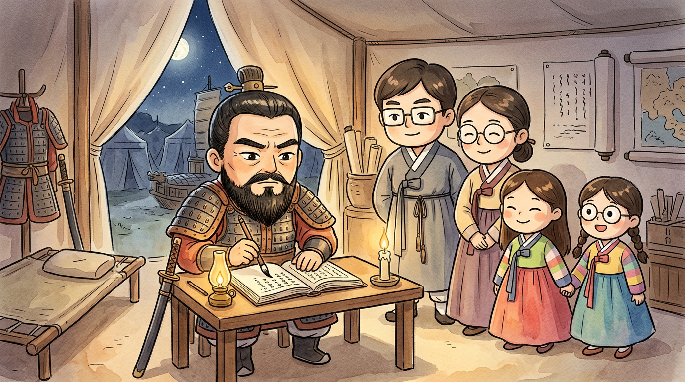
전투를 지휘하는 이순신 장군
거북선(귀선)은 이순신의 창의적 발명품이에요. 배 위에 지붕을 덮고 그 위에 쇠못을 박아, 적이 뛰어올라오지 못하게 했어요. 앞에는 용머리 모양의 장식이 있어 유황 연기를 뿜어냈답니다.
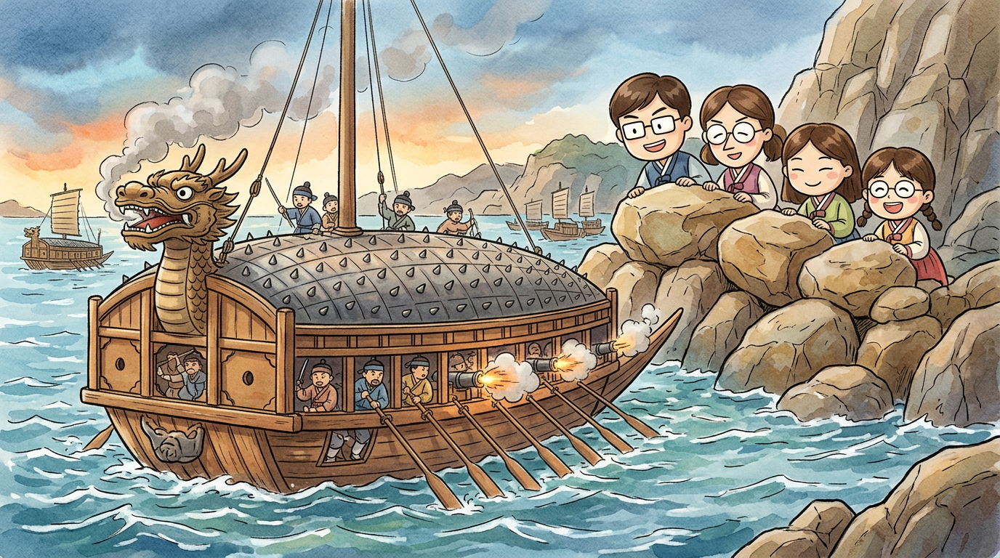
철갑을 두른 거북선의 모습
지붕 덮개: 화살과 총탄을 막아주는 방어력
쇠못: 적 병사가 올라타지 못하게 하는 장치
용머리: 유황 연기를 뿜어 적의 시야를 가림
대포: 사방에 대포를 설치하여 어느 방향이든 공격 가능
돌격함 역할: 적 함대의 중심으로 돌진하여 진형을 무너뜨림
이순신은 출전하자마자 승리를 거두기 시작했어요.
옥포 해전 (1592.5): 첫 출전에서 일본 군함 26척 격파. 조선 수군의 사기를 높인 첫 승리!
사천 해전 (1592.5): 거북선이 최초로 실전에 투입된 전투. 13척 격파.
당포 해전 (1592.6): 21척 격파.
한산도 대첩 (1592.7): 학익진(鶴翼陣)으로 일본 수군 73척 이상 격파! 임진왜란 3대 대첩 중 하나!
부산포 해전 (1592.9): 적의 본거지까지 공격하여 100여 척 격파.
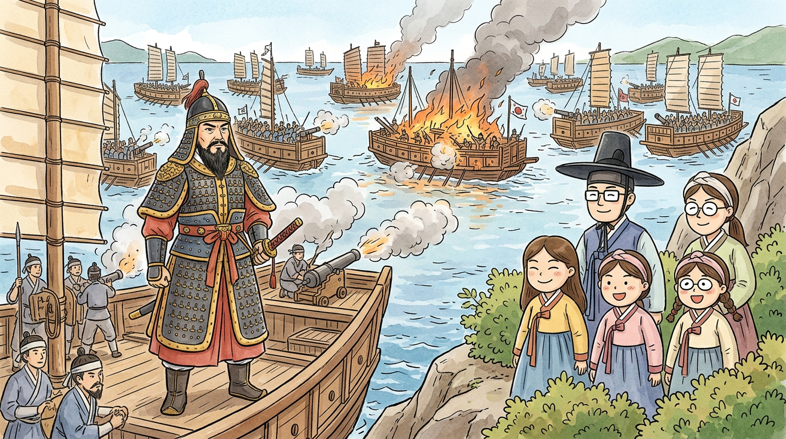
학익진으로 일본 수군을 포위하는 한산도 대첩
한산도 대첩에서 이순신이 사용한 학익진(鶴翼陣)은 학이 날개를 펼친 모양의 진형이에요.
이순신은 먼저 소수의 배로 적을 유인하여 넓은 바다로 끌어냈어요. 좁은 곳에서 싸우면 일본군의 접근전(칼싸움)에 불리했기 때문이에요. 넓은 바다에서 일본 함대를 반달 모양으로 포위한 뒤, 사방에서 대포를 퍼부었답니다.
이 전투로 일본 수군은 사실상 궤멸했어요. 바다를 잃은 일본군은 서해를 통해 보급품을 운반할 수 없게 되었고, 이것이 전쟁의 흐름을 완전히 바꾸었답니다.
학익진(鶴翼陣): 학의 날개 모양으로 적을 포위하는 진형. 좌우 양쪽에서 동시에 공격할 수 있어요.
제해권(制海權): 바다를 지배하는 힘. 이순신이 제해권을 장악하여 일본군의 보급을 차단했어요.
귀선(龜船): 거북선의 한자 이름. 거북이처럼 등이 덮여 있다는 뜻이에요.
선조의 요청으로 명나라가 참전했어요. 명나라 장수 이여송이 4만 대군을 이끌고 내려와 조선군과 함께 평양성을 탈환했답니다 (1593년 1월).
하지만 이여송은 벽제관 전투에서 일본군에게 패한 뒤 소극적으로 변했어요. 결국 전쟁은 교착 상태에 빠지고, 지루한 강화 협상(평화 회담)이 시작되었답니다.
강화 협상이 결렬되자, 1597년 히데요시가 다시 14만 대군을 보냈어요. 이것이 정유재란이에요.
이때 이순신에게 비극이 닥쳤어요. 일본의 간첩 작전에 속은 조정이 이순신을 파직하고, 서울로 끌려와 고문을 당한 뒤 백의종군(일반 병사로 참전)하게 되었어요.
이순신 대신 수군 사령관이 된 원균은 칠천량 해전에서 조선 수군을 거의 전멸시켰어요. 이순신이 수년간 쌓아온 해군력이 하루아침에 무너진 거예요.
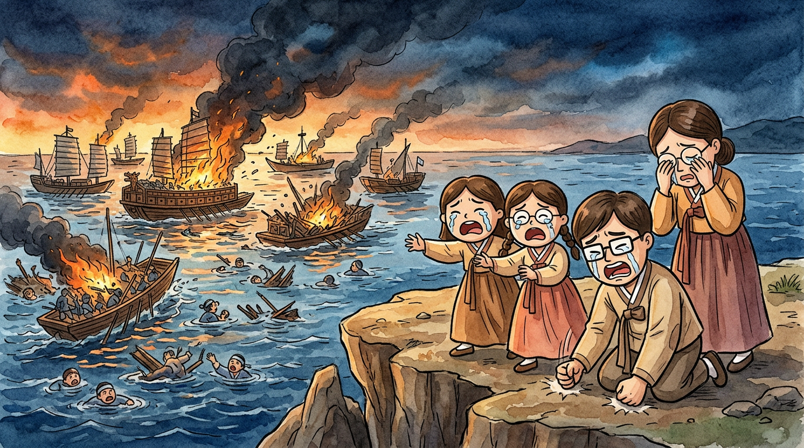
칠천량에서 궤멸하는 조선 수군
일본의 간첩이 "이순신이 거짓 정보로 출전하지 않는다"는 거짓 보고를 흘렸고, 조정은 이것을 믿어 이순신을 파직했어요. 이것은 여러 가지 교훈을 줘요.
첫째, 적의 정보전(가짜 뉴스)에 당하지 않으려면 정보를 다각도로 확인해야 해요.
둘째, 전쟁 중에 최고의 장수를 교체하는 것은 자해 행위와 같아요. 능력 있는 사람을 시기하여 끌어내리면 결국 모두가 손해를 봐요.
셋째, 오늘날에도 가짜 뉴스와 여론 조작이 사회를 혼란에 빠뜨려요. 정보를 비판적으로 판단하는 미디어 리터러시가 중요하답니다.
다시 수군 사령관이 된 이순신에게 남은 배는 겨우 12척이었어요. 부하들은 두려움에 떨었지만, 이순신은 유명한 말을 남겼어요.
"아직 신에게는 12척의 배가 남아 있습니다. 죽을 힘을 다하여 싸우면 능히 막을 수 있습니다."
"필사즉생 필생즉사 (必死則生 必生則死) - 죽고자 하면 살고, 살고자 하면 죽는다."
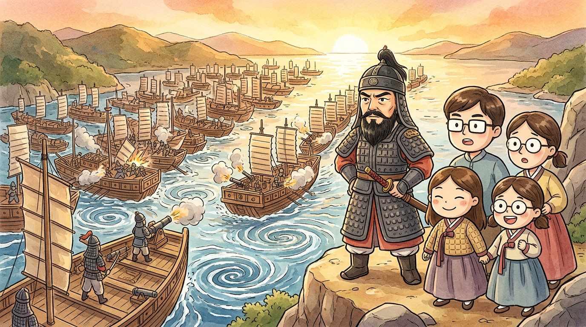
명량 해협에서 12척으로 133척에 맞서는 이순신
이순신은 명량(울돌목)의 좁고 물살이 빠른 해협을 전장으로 선택했어요. 좁은 곳에서는 적의 수적 우위가 소용없어지기 때문이에요. 이순신은 12척으로 일본 군함 133척에 맞서 31척을 격파하는 기적 같은 승리를 거두었답니다!
1598년, 히데요시가 병으로 죽자 일본군은 철수를 시작했어요. 이순신은 도망가는 일본군을 노량 해협에서 공격했어요.
이 전투에서 이순신은 적의 총탄에 맞아 전사했어요. 이순신의 마지막 말은 이러했답니다.
"나의 죽음을 알리지 말라 (勿令知吾死)"
전투 중에 장수가 죽었다는 소식이 퍼지면 군사들의 사기가 떨어질까 봐, 마지막 순간까지 나라를 걱정한 것이에요.
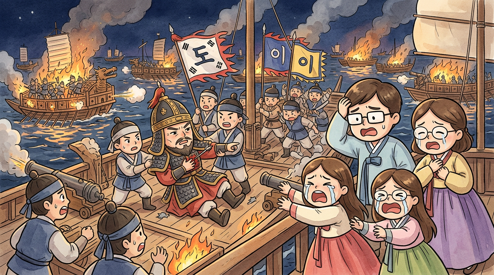
노량 해전에서 최후를 맞는 이순신
7년간의 전쟁(임진왜란 + 정유재란)이 끝난 뒤, 조선은 참혹한 상태였어요.
인구 감소: 전국의 인구가 크게 줄었어요. 전쟁, 기근, 질병으로 수많은 백성이 목숨을 잃었답니다.
국토 황폐화: 경작지의 3분의 2가 황폐해졌어요. 전쟁 전 170만 결이던 농지가 54만 결로 줄었어요.
문화재 소실: 경복궁, 창덕궁, 창경궁 등이 불탔고, 수많은 서적과 예술품이 파괴되거나 약탈당했어요.
도자기 기술 유출: 일본군은 조선의 도자기 장인들을 강제로 끌고 갔어요. 이들이 일본에서 만든 도자기가 일본 도자기 문화의 시작이 되었답니다.
핵심 교훈: 전쟁은 준비하지 않으면 반드시 온다. 그리고 한번 터진 전쟁의 피해는 회복하는 데 수십 년, 수백 년이 걸린다. 평화를 지키는 가장 좋은 방법은 전쟁에 대비하는 것이다.
이순신 장군은 한국에서 가장 존경받는 위인이에요. 100원짜리 동전에 이순신의 초상이 있고, 서울 광화문 광장에도 이순신 동상이 있답니다. 일본 해군의 전설적인 제독 도고 헤이하치로조차 "나를 넬슨(영국의 명장)에 비교하는 것은 좋지만, 이순신에 비교하는 것은 감당할 수 없다"고 말했다는 일화가 있어요.
이순신은 12척의 배로 133척에 맞서 이겼어요. 수가 적어도 이길 수 있었던 비결은 무엇일까요? 공부나 생활에서 비슷한 상황이 있을까요?
이순신이 이긴 비결은 세 가지예요. 첫째, 지형(좁은 해협)을 이용하여 적의 장점(수적 우위)을 무력화했어요. 둘째, 죽을 각오로 싸우는 '필사즉생'의 정신이 있었어요. 셋째, 오랜 경험과 준비가 있었어요. 공부에서도 마찬가지예요. 시험 범위가 넓어도, 중요한 부분(좁은 해협)에 집중하고, 포기하지 않는 마음(필사즉생)으로, 꾸준히 준비(경험)하면 좋은 결과를 얻을 수 있답니다.
임진왜란은 조선이 '준비하지 않아서' 일어난 비극이에요. 오늘날 우리가 미리 준비해야 하는 위험에는 어떤 것이 있을까요?
지진이나 태풍 같은 자연재해, 전염병, 사이버 공격, 기후변화 등이 있어요. 이런 위험은 '언젠가는 올 수 있다'는 것을 인정하고 미리 대비해야 해요. 조선처럼 '괜찮겠지'하며 무시하면 큰 피해를 입게 되요. 가정에서도 비상약품을 준비하고, 대피 경로를 알아두는 것이 중요해요. '대비하는 것'과 '걱정하는 것'은 달라요. 대비는 행동이고, 걱정은 막연한 두려움이에요.
이순신은 나라로부터 억울한 대우(파직, 고문)를 받았지만, 다시 부름받자 나라를 위해 싸웠어요. 억울한 일을 당했는데도 다시 헌신할 수 있었던 이순신의 마음은 어떠했을까요?
이순신의 일기(난중일기)를 보면, 그도 인간이기에 억울하고 분했어요. 하지만 이순신은 개인적인 감정보다 '백성을 지켜야 한다'는 사명감을 더 크게 여겼어요. 이것은 매우 어려운 일이에요. 보통 사람이라면 '나를 이렇게 대우하는 나라를 왜 지켜야 하지?'라고 생각할 수 있거든요. 이순신의 위대함은 바로 여기에 있어요. 나라의 잘못과 백성의 고통을 구분하고, 백성을 위해 끝까지 헌신한 것이랍니다.
임진왜란이 끝난 뒤, 조선은 폐허였어요. 궁궐은 불탔고, 농지는 황폐해졌으며, 백성은 굶주리고 있었어요. 이런 상황에서 왕이 된 사람이 광해군이에요.
광해군은 임진왜란 때 세자로서 분조(왕과 별도로 활동하는 조직)를 이끌며 의병을 모집하고, 전투를 독려한 경험이 있었어요. 전쟁의 참혹함을 직접 본 왕이었답니다.
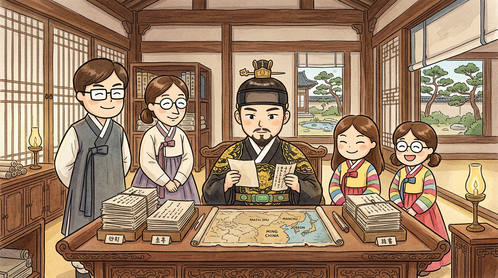
전쟁 후 나라를 재건하는 광해군
광해군은 나라를 다시 일으키기 위해 여러 정책을 펼쳤어요.
대동법 시행: 각종 공물(지방에서 바치는 특산물)을 쌀로 통일하여 바치게 한 세금 개혁. 백성의 부담을 줄여주었어요.
궁궐 재건: 불탄 창덕궁, 창경궁을 재건하고, 새로 경덕궁(경희궁)과 인경궁을 지었어요.
호적 정비: 전쟁으로 흩어진 백성의 호적을 다시 정리하여 세금과 군역의 기반을 마련했어요.
동의보감 편찬: 허준이 25년에 걸쳐 완성한 의학 백과사전. 중국과 조선의 의학 지식을 집대성한 위대한 업적으로, 유네스코 세계기록유산으로 등재되었어요.
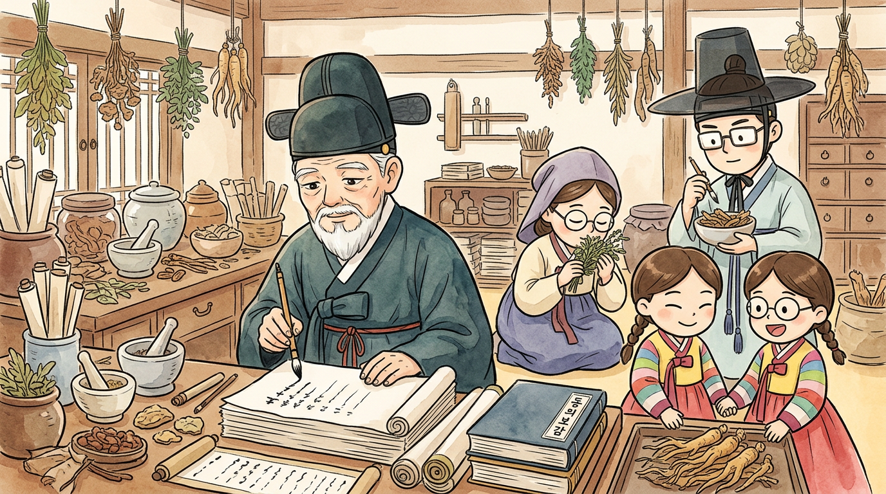
동의보감을 완성하는 허준
이때 동아시아의 국제 정세가 크게 변하고 있었어요. 만주에서 누르하치가 여진족을 통일하고 후금(나중에 청나라)을 세웠어요. 후금은 빠르게 강해져서 명나라를 위협하기 시작했답니다.
명나라는 조선에 도움을 요청했어요. "임진왜란 때 우리가 도와줬으니, 이번에는 너희가 군대를 보내 후금과 함께 싸워라!"
광해군은 매우 어려운 선택에 놓였어요. 명나라는 임진왜란 때 도와준 은혜가 있는 나라이지만, 지금 명나라는 쇠퇴하고 후금은 급부상하고 있었어요.
광해군은 강홍립 장군에게 1만 명의 군대를 주면서 비밀 지시를 내렸어요.
"전세를 보아 행동하라. 명나라가 이기면 함께 싸우고, 후금이 이기면 항복하라."
이것은 명나라에 대한 의리를 완전히 저버리지 않으면서도, 후금과도 적대 관계가 되지 않으려는 실리적인 중립외교였어요.
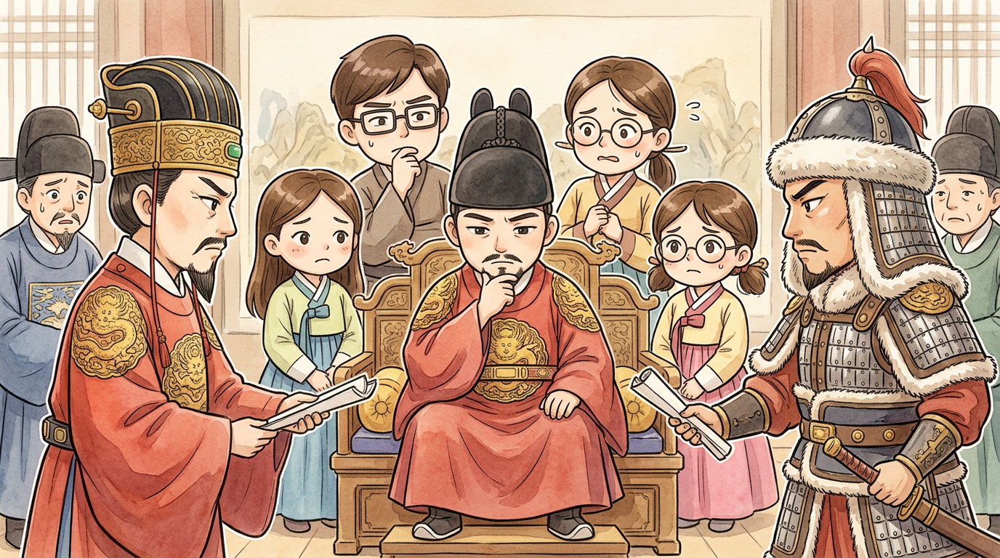
명과 후금 사이에서 줄타기하는 광해군의 외교
실제로 1619년 사르후 전투에서 명나라군이 크게 패하자, 강홍립은 후금에 항복했어요. 덕분에 후금은 조선을 적으로 여기지 않았고, 조선은 전쟁을 피할 수 있었답니다.
중립외교: 두 강대국 사이에서 어느 한쪽에만 치우치지 않고 균형을 유지하는 외교.
대동법(大同法): 지방 특산물 대신 쌀로 통일하여 세금을 내게 한 제도. 백성의 부담을 크게 줄였어요.
실리외교: 명분(의리)보다 실제 이익(나라의 안전)을 우선시하는 외교.
하지만 광해군의 중립외교는 당시 서인 세력에게 큰 비난을 받았어요. "임진왜란 때 목숨을 걸고 도와준 명나라를 배신하다니! 이것은 오랑캐(후금)에게 굴복하는 것이다!"
여기에 광해군이 형 임해군과 동생 영창대군을 죽이고, 계모 인목대비를 유폐(가두어 둔 것)한 것이 명분이 되었어요.
1623년, 서인 세력은 인조반정을 일으켜 광해군을 폐위하고, 인조를 새 왕으로 세웠어요.
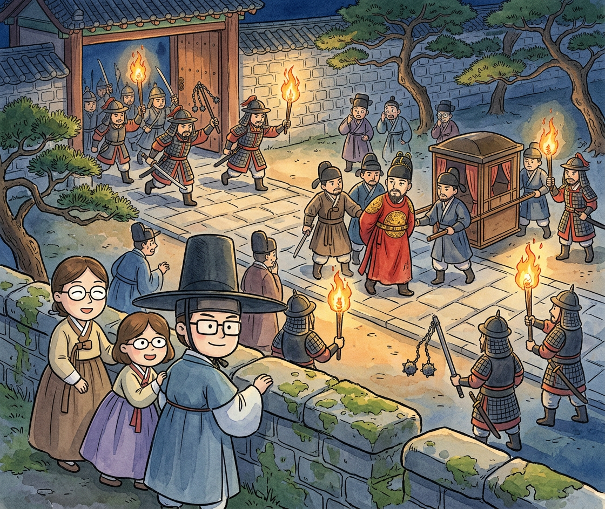
인조반정으로 광해군이 폐위되는 장면
광해군은 당시에는 "의리를 저버린 왕"으로 비난받았지만, 오늘날 역사학자들은 그를 재평가하고 있어요.
광해군의 중립외교가 옳았던 이유: 명나라는 실제로 1644년에 멸망했어요. 광해군의 판단대로 쇠퇴하는 나라였던 거예요. 만약 광해군의 중립외교가 계속되었다면, 병자호란의 치욕은 피할 수 있었을지도 몰라요.
교훈: 감정(의리, 명분)에 휘둘리지 않고 냉철하게 현실을 판단하는 것이 진정한 지혜예요. 하지만 그것이 당장은 비겁하게 보일 수 있어요. "옳은 일"과 "인기 있는 일"이 항상 같지는 않다는 것을 보여주는 역사적 사례랍니다.
광해군의 중립외교는 "명분(의리)"보다 "실리(안전)"를 택한 것이에요. 여러분이라면 어떤 선택을 했을까요? 명분과 실리 중 무엇이 더 중요할까요?
광해군의 중립외교와 인조의 친명 정책 중 어느 것이 더 현명했을까요? 그 결과는 어땠나요?
결과로 보면 광해군의 중립외교가 더 현명했어요. 인조는 친명 정책을 펴다가 후금(청)의 침략을 두 번(정묘호란, 병자호란)이나 받았고, 결국 삼전도의 치욕을 당했거든요. 광해군의 중립외교가 계속되었다면 이런 비극을 피할 수 있었을 거예요. 이것은 외교에서 '감정(의리)'보다 '현실(힘의 균형)'을 냉정하게 판단해야 한다는 중요한 교훈을 줘요.
광해군은 나라를 재건하고 실리적인 외교를 펼쳤지만, 가족을 해치고 궁궐을 많이 지어 백성에게 부담을 준 것도 사실이에요. 한 사람의 장점과 단점을 어떻게 균형 있게 평가할 수 있을까요?
사람을 '완전한 영웅' 또는 '완전한 악인'으로 나누는 것은 위험해요. 광해군은 뛰어난 외교관이자 개혁가였지만, 동시에 가족에게 잔인했고 무리한 건축 사업으로 백성을 괴롭힌 것도 사실이에요. 역사 인물을 평가할 때는 '시대적 상황'을 고려하고, 좋은 점과 나쁜 점을 모두 인정하는 균형 잡힌 시각이 필요해요. 흑백이 아닌 회색의 눈으로 보는 것이 성숙한 역사 인식이랍니다.
오늘날 한국도 미국과 중국이라는 두 강대국 사이에 있어요. 광해군의 중립외교에서 오늘날 배울 점이 있을까요?
광해군의 상황과 오늘날 한국의 상황은 놀랍도록 비슷해요. 두 강대국 사이에서 한쪽에만 치우치면 다른 쪽의 적이 되고, 양쪽 모두와 잘 지내려면 높은 수준의 외교력이 필요해요. 광해군에게서 배울 점은 '감정이 아닌 냉철한 현실 분석'이 중요하다는 것이에요. 동시에 인조반정의 교훈은 '국내 정치와 외교를 분리해서 생각해야 한다'는 것이에요. 외교는 감정이 아니라 국가 이익으로 판단해야 한답니다.
인조반정으로 왕이 된 인조는 광해군의 중립외교를 버리고, 명나라와 가깝게 지내는 정책(친명배금)을 펼쳤어요. "오랑캐인 후금과는 상종할 수 없다! 우리는 문명국 명나라의 편이다!"
이것은 후금(곧 청나라가 됨)에게 명백한 적대 행위였어요. 광해군 시절에는 조선과 원만했던 후금이, 이제 조선을 적으로 보기 시작했답니다.
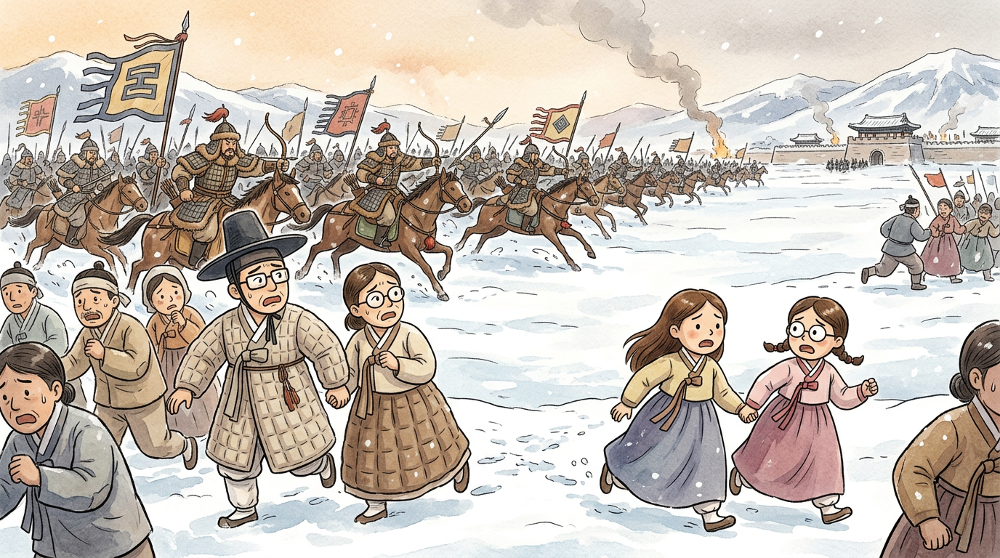
명나라 편에 선 인조와 분노하는 후금
인조와 서인 세력의 친명 정책은 다음과 같은 심각한 문제가 있었어요.
1. 현실을 무시한 명분론: "오랑캐에게 굽힐 수 없다"는 명분은 듣기 좋지만, 현실의 힘의 균형을 완전히 무시한 것이에요. 후금은 이미 명나라보다 강해지고 있었어요.
2. 감정이 판단을 흐리다: "오랑캐"라는 멸시가 상대의 실력을 객관적으로 보지 못하게 했어요. 200년 전 조선이 일본을 무시하다가 임진왜란을 당한 것과 똑같은 실수를 반복한 거예요!
3. 대안 없는 강경론: 후금과 맞서겠다면서도 군사력을 키우지 않았어요. "싸우겠다"면서 싸울 준비는 하지 않은 거예요. 이것은 가장 위험한 조합이에요.
1627년, 후금의 아민이 3만 대군을 이끌고 침략했어요. 이것이 정묘호란이에요.
인조는 강화도로 피난했고, 후금군은 빠르게 남하했어요. 결국 조선은 후금과 "형제의 나라"라는 조건으로 화의(강화)를 맺었답니다.
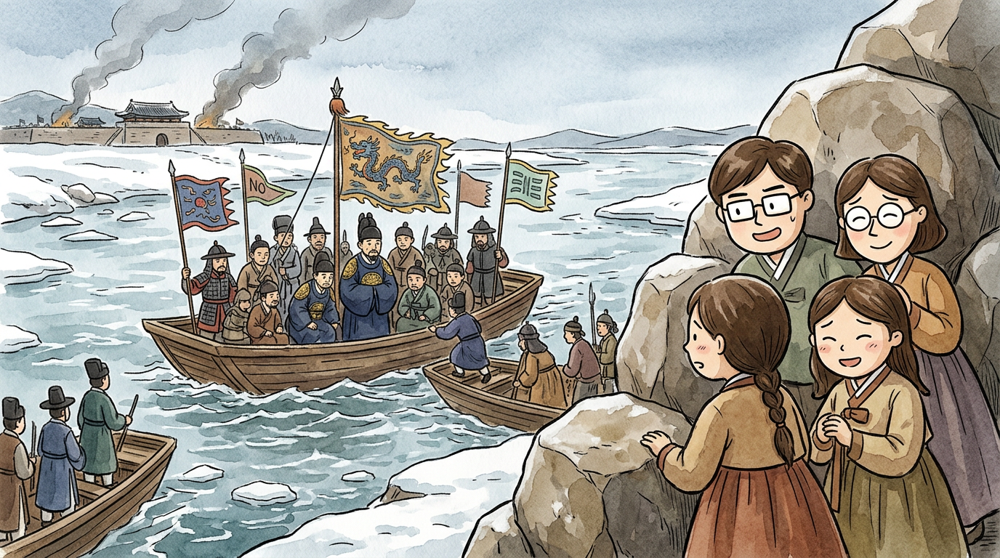
정묘호란으로 강화도에 피난한 인조
정묘호란은 마지막 경고였어요. 후금은 "우리를 적대하지 마라"는 메시지를 보낸 것이에요. 현명한 지도자라면 이 경고를 받아들여야 했어요.
하지만 인조와 조정 대신들은 어떻게 했을까요?
군비 강화? NO. 여전히 군대를 제대로 훈련시키지 않았어요.
외교적 해결? NO. 후금과의 약속(형제 관계)조차 성실히 이행하지 않았어요.
명나라에 대한 의리? YES. 여전히 몰래 명나라와 연락하며 후금을 자극했어요.
임진왜란 때 경고를 무시한 것과 완전히 똑같은 실수를 반복하고 있었어요!
1636년, 후금의 홍타이지는 나라 이름을 청(淸)으로 바꾸고, 스스로 황제라 칭했어요. 그리고 조선에 요구했어요.
"우리는 이제 황제의 나라다. 조선은 형제 관계가 아닌 군신 관계(신하의 나라)로 바꾸어라!"
이것은 조선의 자존심을 크게 건드리는 요구였어요. 조정에서는 격렬한 논쟁이 벌어졌답니다.
주화파(主和派) - 최명길 등: "지금 우리의 군사력으로는 청나라를 이길 수 없습니다. 일단 굴욕을 참고, 힘을 키운 뒤에 대응해야 합니다."
척화파(斥和派) - 김상헌, 윤집, 오달제 등: "오랑캐에게 무릎 꿇을 수 없습니다! 의리를 지키며 싸워야 합니다!"
결국 척화파의 목소리가 이겼어요. 조선은 청나라의 요구를 거절했답니다.
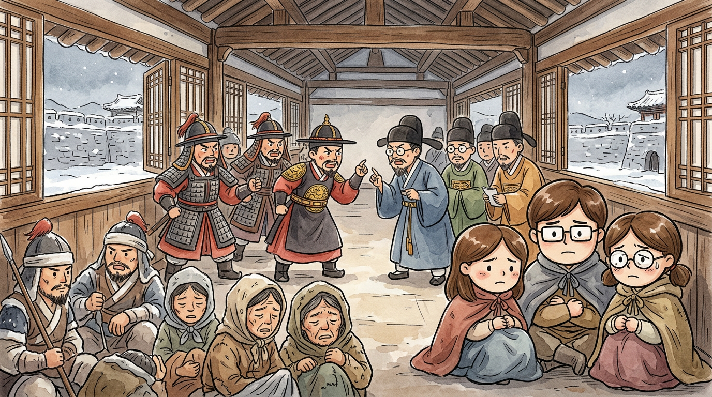
주화파와 척화파의 격렬한 논쟁
척화파의 주장은 도덕적으로 옳아 보였어요. "오랑캐에게 굴복하지 않겠다"는 것은 용기 있는 말이었어요.
하지만 그들에게 물어봐야 할 질문이 있었어요:
"싸워서 이길 수 있습니까?"
대답은 "아니오"였어요. 조선의 군사력은 청나라에 비할 바가 못 되었어요. 그런데도 싸우겠다고 한 것은, 결국 백성의 목숨을 담보로 자신들의 명분을 지키려 한 것이나 마찬가지였어요.
주화파 최명길의 말이 더 현실적이었어요. "치욕을 참고 힘을 기른 뒤 되갚겠다"는 것이 더 지혜로운 선택이었을 수도 있어요. 하지만 당시 분위기에서 이런 말을 하면 "비겁한 놈"으로 낙인찍혔답니다.
1636년 12월, 청 태종 홍타이지가 직접 12만 대군을 이끌고 침략했어요. 청나라 기마병의 속도는 충격적이었어요.
인조는 강화도로 피난하려 했지만, 청나라 선발대가 너무 빨리 내려와 강화도로 가는 길이 막혀버렸어요! 인조는 할 수 없이 남한산성으로 피난했답니다.
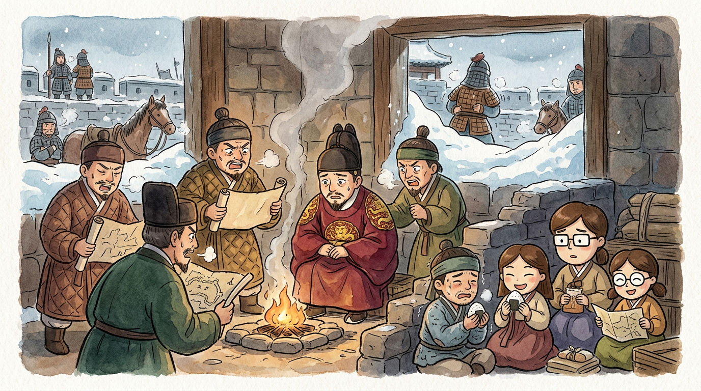
남한산성에 갇힌 인조와 조정 대신들
남한산성은 험한 산 위에 있어 방어에 유리했지만, 겨울에 갇히면 지옥이었어요.
성 안에는 겨우 50일 분의 식량밖에 없었어요. 한겨울의 추위에 병사들은 얼어 죽어갔고, 구원군은 오지 않았어요. 각지에서 온 근왕병(왕을 구하러 온 군대)은 청나라군에게 번번이 격파되었답니다.
강화도로 피난한 왕비와 왕자들도 청나라군에게 잡혔다는 소식이 전해졌어요. 이제 정말 희망이 없었어요.
47일간의 농성 끝에, 인조는 항복을 결심했어요. 1637년 음력 1월 30일, 인조는 파란색 옷(청나라에 항복하는 의미)을 입고 남한산성을 나와, 한강 남쪽 삼전도로 갔어요.
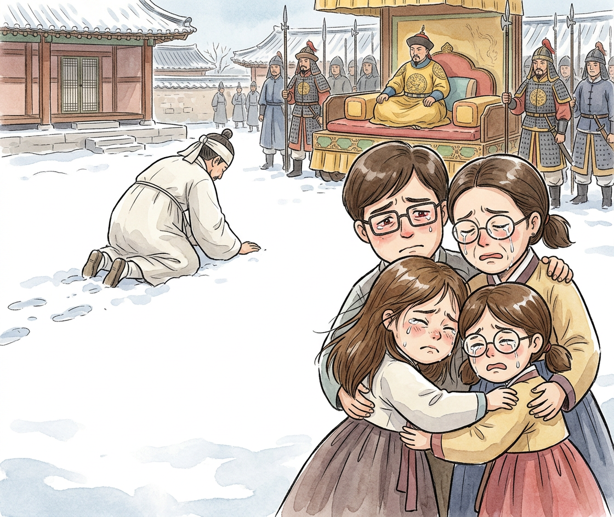
삼전도에서 청 태종에게 항복하는 인조
그곳에서 인조는 청 태종 홍타이지 앞에 무릎을 꿇고, 세 번 절하고 아홉 번 머리를 땅에 박는 예(삼배구고두례)를 행했어요. 이것이 조선 역사상 가장 치욕적인 순간, 삼전도의 굴욕이에요.
1. 조선은 청나라의 신하국이 된다.
2. 명나라와의 관계를 끊는다.
3. 소현세자와 봉림대군(나중의 효종)을 인질로 보낸다.
4. 막대한 공물(금, 은, 베 등)을 바친다.
5. 청나라가 명나라를 칠 때 군대를 보내 돕는다.
끝까지 항복을 반대한 세 명의 신하가 있었어요. 윤집, 오달제, 홍익한 — 이들을 삼학사(三學士)라 불러요.
삼학사는 청나라에 끌려가 "항복하면 살려주겠다"는 회유를 거부하고, 끝내 처형당했어요. 그들의 충절은 존경받지만, 그 충절이 전쟁을 막을 수는 없었답니다.
50만 포로: 수십만 명의 백성이 청나라에 포로로 끌려갔어요. 특히 여성들이 많았고, 이들은 "환향녀(돌아온 여자)"라는 멸시를 받았어요. 전쟁의 가장 큰 피해자는 항상 힘없는 백성이에요.
소현세자의 비극: 인질로 갔던 소현세자는 청나라에서 서양 문물을 접하고 개혁적 사고를 갖게 되었지만, 귀국 후 의문의 죽음을 당했어요.
병자호란의 핵심 교훈 세 가지:
1. 외교는 감정이 아니라 냉철한 판단으로 해야 한다. "오랑캐"라고 무시한 것이 재앙을 불렀어요.
2. 명분만으로는 나라를 지킬 수 없다. "싸우겠다"면서 싸울 준비를 하지 않은 것은 무책임이에요.
3. 같은 실수를 반복하지 마라. 임진왜란에서 배운 교훈(준비 부족의 위험)을 40년도 안 되어 그대로 반복했어요.
청나라는 삼전도에 삼전도비(대청황제공덕비)를 세우게 했어요. 이 비석에는 청 태종의 공덕을 칭송하는 내용이 적혀 있어요. 조선의 치욕을 영원히 기록하려는 것이었죠. 이 비석은 지금도 서울 송파구에 남아 있는데, 오랜 세월 동안 조선인들에 의해 훼손되었다가, 현재는 사적으로 보호되고 있답니다. 아픈 역사도 기억해야 같은 실수를 반복하지 않을 수 있어요.
병자호란 직전, 주화파(평화 협상)와 척화파(끝까지 싸움) 중 여러분은 어느 쪽을 지지했을까요? 당시의 상황을 고려하여 이유를 설명해 보세요.
임진왜란(준비 부족)과 병자호란(외교 실패)은 40년도 안 되는 사이에 일어났어요. 왜 조선은 같은 실수를 반복했을까요? 우리는 어떻게 하면 같은 실수를 반복하지 않을 수 있을까요?
사람과 사회는 고통스러운 기억을 빨리 잊으려는 경향이 있어요. 또한 '이번에는 다르다'라고 스스로를 속이기도 해요. 조선은 임진왜란의 교훈을 제도화하지 못했어요. 같은 실수를 반복하지 않으려면 첫째, 역사를 기록하고 배워야 해요. 둘째, 개인의 기억이 아닌 제도와 시스템으로 대비해야 해요. 셋째, 불편한 진실을 말하는 사람의 목소리에 귀 기울여야 해요.
병자호란에서 가장 큰 피해를 입은 것은 왕이나 대신이 아니라 평범한 백성이었어요. 전쟁에서 힘없는 사람들이 가장 큰 피해를 입는 이유는 무엇이고, 이것을 막으려면 어떻게 해야 할까요?
지도자들은 전쟁을 결정하지만, 전쟁터에서 싸우고 죽는 것은 평범한 백성이에요. 병자호란 때 50만 명이 포로로 끌려간 것처럼, 전쟁의 피해는 항상 약자에게 집중되어요. 이것을 막으려면 첫째, 전쟁을 결정하는 사람이 전쟁의 결과에 대해 책임을 져야 해요. 둘째, 국민이 전쟁과 평화에 대한 결정에 참여할 수 있어야 해요. 민주주의가 중요한 이유 중 하나가 바로 이것이랍니다.
최명길(주화파)은 당시에는 비겁하다고 비난받았지만, 오늘날에는 현실적이었다고 재평가받고 있어요. '당장은 비난받더라도 옳은 일을 하는 용기'에 대해 이야기해 보세요.
최명길은 모두가 '싸우자!'라고 외칠 때, 혼자 '우리가 질 게 뻔한 전쟁은 하면 안 됩니다'라고 말했어요. 이것은 대단한 용기예요. 왜냐하면 다수의 의견에 반대하면 '비겁쟁이', '매국노'라는 비난을 받거든요. 하지만 진정한 용기는 모두가 찬성할 때 '아니오'라고 말하는 것일 수 있어요. 오늘날에도 다수의 의견이 항상 옳은 것은 아니에요. 군중심리에 휩쓸리지 않고 자기 생각을 말하는 것이 진정한 용기랍니다.
| 업적 | 시기 | 특징 | 세계사적 의미 |
|---|---|---|---|
| 훈민정음 | 1443 창제, 1446 반포 | 과학적 원리로 설계된 문자 | 창제자, 시기, 원리가 모두 기록된 유일한 문자 |
| 자격루 | 1434 | 자동으로 시각을 알리는 물시계 | 동아시아 최고 수준의 자동 기계장치 |
| 측우기 | 1441 | 표준화된 강우량 측정 장치 | 유럽보다 약 200년 앞선 세계 최초 |
| 앙부일구 | 세종 시대 | 시간과 절기를 알려주는 해시계 | 백성을 위해 거리에 설치한 공공 시계 |
| 칠정산 | 1442 | 한양 기준 독자 역법 | 동서양 천문학을 융합한 최첨단 달력 |
| 동의보감 | 1610 | 동양 의학 집대성 | 유네스코 세계기록유산 |
| 시기 | 연도 | 핵심 사건 | 특징 |
|---|---|---|---|
| 건국과 기틀 | 1392~1418 | 조선 건국, 한양 천도 | 왕권 확립, 유교 국가 설계 |
| 세종의 황금기 | 1418~1450 | 훈민정음, 과학기술 발전 | 문화와 과학의 전성기 |
| 왕위 찬탈과 혼란 | 1453~1494 | 계유정난, 사육신 사건 | 세조의 왕권 강화, 훈구파 성장 |
| 사화의 시대 | 1498~1567 | 4대 사화, 연산군 폭정 | 훈구파 vs 사림파 대립 |
| 임진왜란 | 1592~1598 | 7년 전쟁, 이순신 활약 | 준비 부족의 대가, 국토 황폐화 |
| 재건과 외교 | 1608~1623 | 광해군의 중립외교, 동의보감 | 실리외교, 전후 복구 |
| 병자호란 | 1627~1637 | 정묘호란, 삼전도의 굴욕 | 외교 실패의 대가, 청나라 복속 |
| 인물 | 분야 | 대표 업적 | 명언/일화 |
|---|---|---|---|
| 이성계(태조) | 정치/군사 | 조선 건국 | 위화도 회군 |
| 정도전 | 정치/사상 | 조선 제도 설계 | 재상 중심 정치의 꿈 |
| 세종대왕 | 정치/문화/과학 | 훈민정음, 과학기술 발전 | 책을 이불 속에 숨기고 읽은 왕 |
| 장영실 | 과학기술 | 자격루, 앙부일구 등 발명 | 노비 출신 천재 과학자 |
| 이순신 | 군사 | 임진왜란 해전 전승 | "나의 죽음을 알리지 말라" |
| 광해군 | 정치/외교 | 중립외교, 전후 재건 | 재평가되는 실리적 외교관 |
| 허준 | 의학 | 동의보감 편찬 | 25년에 걸친 의학 집대성 |
| 정몽주 | 충절 | 고려에 대한 충절 | 단심가, 선죽교 |
| 이이(율곡) | 학문/정치 | 십만양병설 | 무시당한 예언자 |